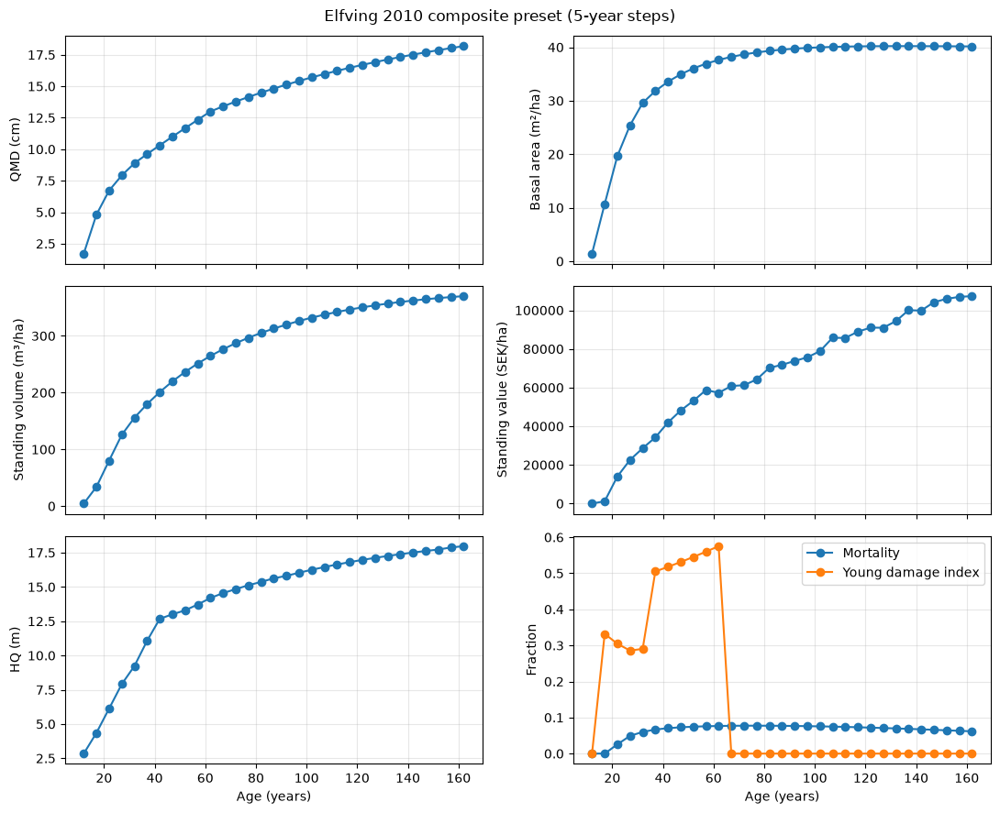
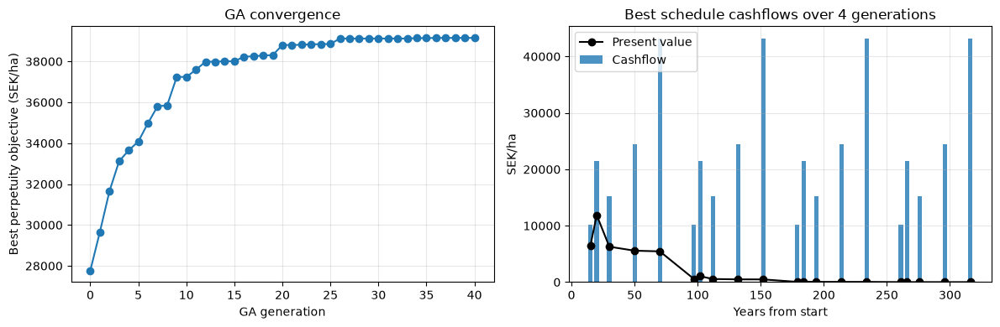
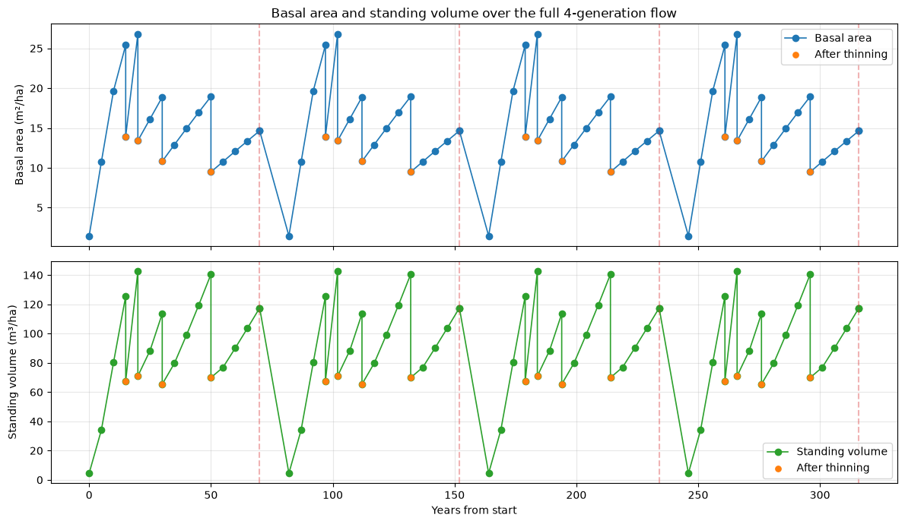
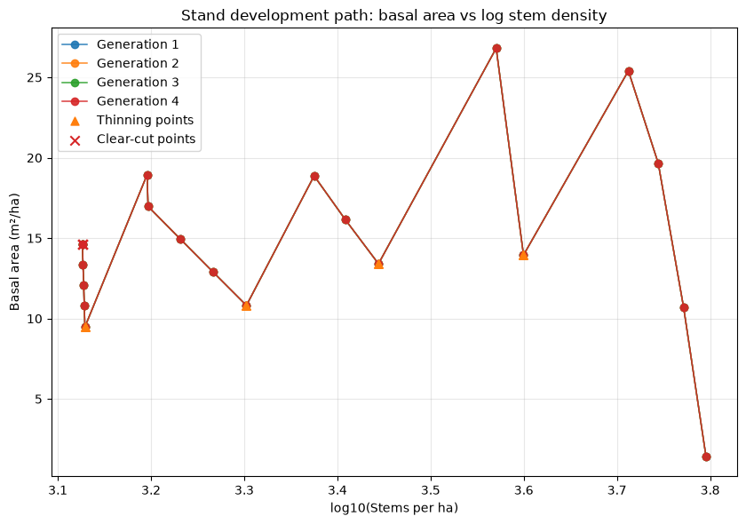
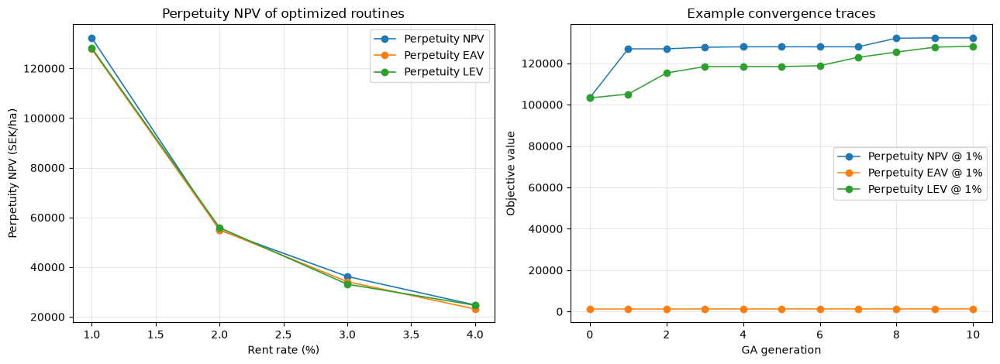
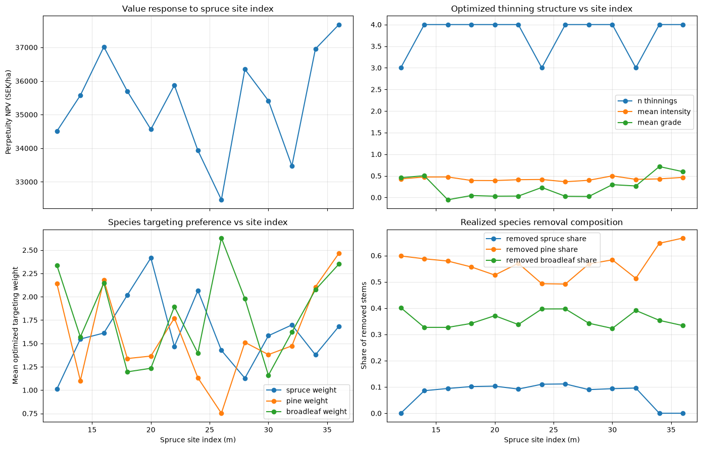

Elfving 2010 composite preset demo#
This notebook demonstrates a reusable simulation-context preset for a composite stand workflow:
Regeneration quality via the published Elfving regeneration functions (Appendix 2; ASINW).
Stand creation via NYSKOG.
Young-stand growth via Nyström (2000 + Nyström/Söderberg 1987) with Näslund (1986) damage index and damage mortality.
Mortality routing via the Swedish mortality engine each 5-year step.
Smoothed phase-over from young to mature growth and mature-tree forecasting with Elfving 2010 stand-level correction.
Standing valuation each 5-year step with Söderberg (1992) bark/height and Mellanskog 2013 prices.
Handover logic (pyforestry preset)#
In Elfving2010Pipeline.step() the handover is handled as a smooth hybrid, not a hard plot-type switch:
Trees with
dbh_cm < handover_dbh_cmare treated as young-phase trees and updated with Nyström-based young-stand growth (_apply_nystrom_young_growth).The Elfving 2010 mature-tree step is then run through the simulation context (
_ctx.update_step(dt)).For trees that were young at step start, DBH is blended between young and mature trajectories using
phase_over_weight = sigmoid((mean_height - handover_mean_height_m) / handover_smoothing_width_m).As stand mean height rises,
phase_over_weightmoves from ~0 to ~1, so influence shifts progressively from young-stand equations to mature-tree equations.
handover_dbh_cm remains the tree-level split helper, while handover_mean_height_m + handover_smoothing_width_m control how quickly the stand-level transition occurs.
[1]:
from pathlib import Path
import matplotlib.pyplot as plt
from pyforestry.base.helpers.primitives import SiteBase
from pyforestry.sweden.simulation.presets import (
Elfving2010Pipeline,
Elfving2010PipelineConfig,
build_elfving_2010_pipeline,
)
from pyforestry.sweden.site import Sweden, SwedishSite
from pyforestry.sweden.siteindex.sis.generated_site_category_trees import (
predict_site_categories_county_tree,
)
from pyforestry.sweden.siteindex.sis.hagglund_lundmark_1977 import Hagglund_Lundmark_1977_SIS
[2]:
class SwedishSiteDemo(SwedishSite):
"""Concrete wrapper for notebooks (implements SiteBase abstract method)."""
def compute_attributes(self) -> None:
SwedishSite.__post_init__(self)
def __post_init__(self) -> None:
SiteBase.__post_init__(self)
[3]:
site_index_pine_m = 20.0
site_index_spruce_m = 22.0
county = Sweden.County.KOPPARBERG_OVRIGA
site_category_species = "Pinus sylvestris"
requested_sis = site_index_pine_m
predicted_site_categories = predict_site_categories_county_tree(
sis_hagglund_1979=requested_sis,
species=site_category_species,
Direktlan=county,
)
site = SwedishSiteDemo(
latitude=60.5,
longitude=15.0,
altitude=150.0,
field_layer=predicted_site_categories["field_layer"],
bottom_layer=predicted_site_categories["bottom_layer"],
soil_texture=predicted_site_categories["soil_texture"],
soil_moisture=predicted_site_categories["soil_moisture"],
soil_depth=predicted_site_categories["soil_depth"],
soil_water=predicted_site_categories["soil_water"],
ditched=predicted_site_categories["ditched"],
)
achieved_sis = Hagglund_Lundmark_1977_SIS(
species=site_category_species,
latitude=site.latitude,
altitude=site.altitude or 0.0,
soil_moisture=site.soil_moisture,
ground_layer=site.bottom_layer or Sweden.BottomLayer.FRESH_MOSS,
vegetation=site.field_layer,
soil_texture=site.soil_texture or Sweden.SoilTextureTill.SANDY,
climate_code=site.climate_zone or Sweden.ClimateZone.K1,
lateral_water=site.soil_water or Sweden.SoilWater.SELDOM_NEVER,
soil_depth=site.soil_depth or Sweden.SoilDepth.DEEP,
incline_percent=site.incline_percent or 0.0,
aspect=site.aspect or 0.0,
nfi_adjustments=True,
dlan=site.county or county,
ditched=bool(site.ditched),
peat=False,
gotland=False,
coast=(site.distance_to_coast or 9999.0) < 50.0,
limes_norrlandicus=bool(site.n_of_limes_norrlandicus),
)
sis_closeness = {
"requested_sis": requested_sis,
"achieved_sis": float(achieved_sis),
"sis_abs_error": abs(float(achieved_sis) - requested_sis),
"sis_rel_error_pct": 100.0 * abs(float(achieved_sis) - requested_sis) / requested_sis,
}
display({"sis_closeness": sis_closeness, "predicted_site_categories": predicted_site_categories})
cube_path = Path("/tmp/pyforestry_elfving_2010_valuation_cube.nc")
config = Elfving2010PipelineConfig(
site_index_pine_m=site_index_pine_m,
site_index_spruce_m=site_index_spruce_m,
initial_age_years=12.0,
sample_trees=80,
random_seed=42,
dt_years=5.0,
handover_dbh_cm=10.0,
handover_mean_height_m=7.0,
handover_smoothing_width_m=1.0,
valuation_solution_cube_path=str(cube_path),
valuation_solution_cube_autogenerate_if_missing=True,
valuation_solution_cube_generate_workers=2,
)
preset = build_elfving_2010_pipeline(config)
# Builds the cube on first run, then reuses the cached file.
preset.ensure_valuation_solution_cube(
path=str(cube_path),
workers=config.valuation_solution_cube_generate_workers,
)
preset
{'sis_closeness': {'requested_sis': 20.0,
'achieved_sis': 20.698654683125625,
'sis_abs_error': 0.6986546831256248,
'sis_rel_error_pct': 3.493273415628124},
'predicted_site_categories': {'field_layer': <SwedenFieldLayer.LICHEN_FREQUENT: Vegetation(code=17, swedish_name='Lavrik', english_name='Lichen, frequent occurrence', index=-0.5)>,
'bottom_layer': <SwedenBottomLayer.BOGMOSS_TYPE: BottomLayerType(code=4, english_name='Bogmoss type (Sphagnum)', swedish_name='Vitmosstyp')>,
'soil_texture': <SwedenSoilTextureTill.SANDY_MOIG: SoilTextureCategory(code=4, swedish_name='Sandig-moig morän', english_name='Sandy-silty till', short_name='Medium sand')>,
'soil_moisture': <SwedenSoilMoisture.MESIC: SoilMoistureData(code=2, swedish_description='frisk', english_description='Mesic (subsoil water depth = 1-2 m)')>,
'soil_depth': <SwedenSoilDepth.DEEP: SoilDepthCat(code=1, swedish_description='Mäktigt >70 cm. Inga synliga hällar', english_description='Deep >70cm. No visible stone outcrops.')>,
'soil_water': <SwedenSoilWater.SHORTER_PERIODS: SoilWaterCat(code=2, swedish_description='kortare perioder', english_description='Shorter periods')>,
'ditched': False}}
Generating Solution Cube using 2 parallel processes...
Pricelist hash: 4058af6a860784c4a6ce94f561a4f484a0401624c2f3cc8405c3074570164174
Total trees to process: 168
Generating Solution Cube: 100%|██████████| 168/168 [00:48<00:00, 3.49it/s]
Finished parallel computation in 48.21 seconds.
Successfully created xarray Dataset.
Saving solution cube to /tmp/pyforestry_elfving_2010_valuation_cube.nc...
Save complete.
Loading solution cube from /tmp/pyforestry_elfving_2010_valuation_cube.nc...
Pricelist hash verified.
Cube loaded successfully.
[3]:
<pyforestry.sweden.simulation.presets.elfving_2010_pipeline.Elfving2010Pipeline at 0x7ff660d47d70>
[4]:
results = preset.run_projection(site=site, n_steps=30)
results
/home/runner/work/pyforestry/pyforestry/src/pyforestry/sweden/simulation/mortality/engine.py:452: UserWarning: Soderberg self-thinning annual probability exceeded [0, 1]; clamped.
probabilities, adjusted, factors, diag = calibrate_soderberg(
Loading solution cube from /tmp/pyforestry_elfving_2010_valuation_cube.nc...
Pricelist hash verified.
Cube loaded successfully.
[4]:
| step_index | age_years | years_elapsed | stems_per_ha | mean_dbh_cm | mean_height_m | qmd_cm | hq_m | basal_area_m2_ha | standing_volume_m3sk_per_ha | ... | birch_ba_share | handover_dbh_cm | handover_mean_height_m | handover_smoothing_width_m | phase_over_weight | young_damage_index_mean | young_damage_mortality_stems_removed_per_ha | mortality_fraction_mean | mortality_stems_removed_per_ha | young_stand_potential_q | |
|---|---|---|---|---|---|---|---|---|---|---|---|---|---|---|---|---|---|---|---|---|---|
| 0 | 0.0 | 12.0 | 0.0 | 6244.836223 | 1.160088 | 1.918334 | 1.717078 | 2.842679 | 1.446076 | 4.496444 | ... | 0.280345 | 10.0 | 7.0 | 1.0 | 0.020369 | 0.000000 | 0.000000 | 0.000000 | 0.000000 | 77.405649 |
| 1 | 1.0 | 17.0 | 5.0 | 5908.674359 | 3.723783 | 3.101748 | 4.805095 | 4.353365 | 10.714795 | 33.963809 | ... | 0.399829 | 10.0 | 7.0 | 1.0 | 0.026043 | 0.332107 | 336.161863 | 0.000000 | 0.000000 | 77.405649 |
| 2 | 2.0 | 22.0 | 10.0 | 5550.689031 | 5.248992 | 4.522355 | 6.714606 | 6.124363 | 19.655217 | 80.164338 | ... | 0.357841 | 10.0 | 7.0 | 1.0 | 0.089333 | 0.304633 | 267.431934 | 0.025557 | 90.553394 | 77.405649 |
| 3 | 3.0 | 27.0 | 15.0 | 5155.787371 | 6.176141 | 5.668342 | 7.920347 | 7.906953 | 25.402312 | 125.554411 | ... | 0.350014 | 10.0 | 7.0 | 1.0 | 0.252886 | 0.285739 | 230.941659 | 0.049156 | 163.960002 | 77.405649 |
| 4 | 4.0 | 32.0 | 20.0 | 4771.097075 | 6.911576 | 6.123854 | 8.886608 | 9.230598 | 29.592402 | 155.809700 | ... | 0.333385 | 10.0 | 7.0 | 1.0 | 0.425136 | 0.290409 | 198.591669 | 0.060045 | 186.098627 | 77.405649 |
| 5 | 5.0 | 37.0 | 25.0 | 4382.269859 | 7.540848 | 6.778780 | 9.614655 | 11.067369 | 31.816795 | 179.806209 | ... | 0.326846 | 10.0 | 7.0 | 1.0 | 0.397661 | 0.505103 | 198.380126 | 0.066713 | 190.447090 | 77.405649 |
| 6 | 6.0 | 42.0 | 30.0 | 4016.926255 | 8.153873 | 7.383881 | 10.313617 | 12.673264 | 33.558750 | 200.999074 | ... | 0.320099 | 10.0 | 7.0 | 1.0 | 0.563326 | 0.517898 | 180.756170 | 0.070496 | 184.587433 | 77.405649 |
| 7 | 7.0 | 47.0 | 35.0 | 3679.230739 | 8.761359 | 7.953915 | 10.995712 | 13.005644 | 34.937647 | 219.777138 | ... | 0.313630 | 10.0 | 7.0 | 1.0 | 0.705125 | 0.531285 | 163.332790 | 0.072910 | 174.362726 | 77.405649 |
| 8 | 8.0 | 52.0 | 40.0 | 3370.231445 | 9.369156 | 8.497383 | 11.668168 | 13.291059 | 36.037526 | 236.467046 | ... | 0.307575 | 10.0 | 7.0 | 1.0 | 0.810059 | 0.545287 | 146.413942 | 0.074574 | 162.585352 | 77.405649 |
| 9 | 9.0 | 57.0 | 45.0 | 3089.434197 | 9.979890 | 9.018861 | 12.335058 | 13.719830 | 36.919113 | 251.337857 | ... | 0.301817 | 10.0 | 7.0 | 1.0 | 0.880636 | 0.559934 | 130.243720 | 0.075759 | 150.553528 | 77.405649 |
| 10 | 10.0 | 62.0 | 50.0 | 2835.626417 | 10.594035 | 9.520410 | 12.998284 | 14.192401 | 37.627980 | 264.616746 | ... | 0.296404 | 10.0 | 7.0 | 1.0 | 0.925559 | 0.575250 | 115.006339 | 0.076615 | 138.801440 | 77.405649 |
| 11 | 11.0 | 67.0 | 55.0 | 2708.036068 | 10.792965 | 9.629840 | 13.401428 | 14.551632 | 38.198514 | 276.492298 | ... | 0.291301 | 10.0 | 7.0 | 1.0 | 0.999161 | 0.000000 | 0.000000 | 0.077115 | 127.590349 | 77.405649 |
| 12 | 12.0 | 72.0 | 60.0 | 2590.878683 | 10.965539 | 9.701643 | 13.783091 | 14.839674 | 38.657183 | 287.127491 | ... | 0.286467 | 10.0 | 7.0 | 1.0 | 0.999487 | 0.000000 | 0.000000 | 0.077347 | 117.157386 | 77.405649 |
| 13 | 13.0 | 77.0 | 65.0 | 2483.378793 | 11.114274 | 9.740641 | 14.145055 | 15.124438 | 39.024927 | 296.658483 | ... | 0.281966 | 10.0 | 7.0 | 1.0 | 0.999675 | 0.000000 | 0.000000 | 0.077409 | 107.499890 | 77.405649 |
| 14 | 14.0 | 82.0 | 70.0 | 2384.733751 | 11.241172 | 9.750914 | 14.488761 | 15.365486 | 39.318075 | 305.203906 | ... | 0.277621 | 10.0 | 7.0 | 1.0 | 0.999788 | 0.000000 | 0.000000 | 0.077297 | 98.645042 | 77.405649 |
| 15 | 15.0 | 87.0 | 75.0 | 2294.203347 | 11.348118 | 9.736075 | 14.815395 | 15.628808 | 39.550159 | 312.868195 | ... | 0.273456 | 10.0 | 7.0 | 1.0 | 0.999858 | 0.000000 | 0.000000 | 0.077022 | 90.530404 | 77.405649 |
| 16 | 16.0 | 92.0 | 80.0 | 2211.083701 | 11.436786 | 9.702229 | 15.125962 | 15.808457 | 39.732060 | 319.836962 | ... | 0.269493 | 10.0 | 7.0 | 1.0 | 0.999903 | 0.000000 | 0.000000 | 0.076612 | 83.119646 | 77.405649 |
| 17 | 17.0 | 97.0 | 85.0 | 2134.760093 | 11.508413 | 9.655159 | 15.421193 | 16.037550 | 39.872632 | 326.304062 | ... | 0.265374 | 10.0 | 7.0 | 1.0 | 0.999932 | 0.000000 | 0.000000 | 0.076124 | 76.323608 | 77.405649 |
| 18 | 18.0 | 102.0 | 90.0 | 2064.603609 | 11.564655 | 9.590973 | 15.702089 | 16.251477 | 39.979873 | 332.138256 | ... | 0.261364 | 10.0 | 7.0 | 1.0 | 0.999952 | 0.000000 | 0.000000 | 0.075534 | 70.156484 | 77.405649 |
| 19 | 19.0 | 107.0 | 95.0 | 2000.080175 | 11.606806 | 9.511978 | 15.969320 | 16.451129 | 40.059926 | 337.400853 | ... | 0.257433 | 10.0 | 7.0 | 1.0 | 0.999966 | 0.000000 | 0.000000 | 0.074842 | 64.523434 | 77.405649 |
| 20 | 20.0 | 112.0 | 100.0 | 1940.682704 | 11.636096 | 9.420243 | 16.223584 | 16.637394 | 40.117884 | 342.147683 | ... | 0.253576 | 10.0 | 7.0 | 1.0 | 0.999975 | 0.000000 | 0.000000 | 0.074020 | 59.397471 | 77.405649 |
| 21 | 21.0 | 117.0 | 105.0 | 1885.966932 | 11.653553 | 9.317630 | 16.465434 | 16.810752 | 40.157840 | 346.431360 | ... | 0.249676 | 10.0 | 7.0 | 1.0 | 0.999981 | 0.000000 | 0.000000 | 0.073025 | 54.715772 | 77.405649 |
| 22 | 22.0 | 122.0 | 110.0 | 1835.505689 | 11.660434 | 9.205852 | 16.695619 | 16.972230 | 40.183769 | 350.295042 | ... | 0.245832 | 10.0 | 7.0 | 1.0 | 0.999986 | 0.000000 | 0.000000 | 0.071991 | 50.461243 | 77.405649 |
| 23 | 23.0 | 127.0 | 115.0 | 1788.901943 | 11.657743 | 9.086389 | 16.914810 | 17.121392 | 40.198575 | 353.779993 | ... | 0.242030 | 10.0 | 7.0 | 1.0 | 0.999989 | 0.000000 | 0.000000 | 0.070915 | 46.603747 | 77.405649 |
| 24 | 24.0 | 132.0 | 120.0 | 1745.825086 | 11.646434 | 8.960620 | 17.123538 | 17.260464 | 40.204772 | 356.921314 | ... | 0.238237 | 10.0 | 7.0 | 1.0 | 0.999992 | 0.000000 | 0.000000 | 0.069772 | 43.076856 | 77.405649 |
| 25 | 25.0 | 137.0 | 125.0 | 1705.962255 | 11.627420 | 8.829764 | 17.322363 | 17.390175 | 40.204398 | 359.748978 | ... | 0.234454 | 10.0 | 7.0 | 1.0 | 0.999993 | 0.000000 | 0.000000 | 0.068556 | 39.862831 | 77.405649 |
| 26 | 26.0 | 142.0 | 130.0 | 1669.009541 | 11.601550 | 8.694822 | 17.511920 | 17.511062 | 40.199091 | 362.289089 | ... | 0.230728 | 10.0 | 7.0 | 1.0 | 0.999995 | 0.000000 | 0.000000 | 0.067332 | 36.952714 | 77.405649 |
| 27 | 27.0 | 147.0 | 135.0 | 1634.729058 | 11.569511 | 8.556802 | 17.692598 | 17.623757 | 40.190083 | 364.568130 | ... | 0.226973 | 10.0 | 7.0 | 1.0 | 0.999996 | 0.000000 | 0.000000 | 0.065942 | 34.280484 | 77.405649 |
| 28 | 28.0 | 152.0 | 140.0 | 1602.868007 | 11.532006 | 8.416463 | 17.865013 | 17.729871 | 40.178557 | 366.609546 | ... | 0.223212 | 10.0 | 7.0 | 1.0 | 0.999996 | 0.000000 | 0.000000 | 0.064556 | 31.861051 | 77.405649 |
| 29 | 29.0 | 157.0 | 145.0 | 1573.222732 | 11.489687 | 8.274553 | 18.029599 | 17.880017 | 40.165415 | 368.430747 | ... | 0.219432 | 10.0 | 7.0 | 1.0 | 0.999997 | 0.000000 | 0.000000 | 0.063158 | 29.645274 | 77.405649 |
| 30 | 30.0 | 162.0 | 150.0 | 1545.592421 | 11.443142 | 8.131647 | 18.186838 | 17.974705 | 40.151269 | 370.045542 | ... | 0.215678 | 10.0 | 7.0 | 1.0 | 0.999997 | 0.000000 | 0.000000 | 0.061762 | 27.630311 | 77.405649 |
31 rows × 28 columns
[5]:
fig, axes = plt.subplots(3, 2, figsize=(11, 9), sharex=True)
axes = axes.flatten()
axes[0].plot(results["age_years"], results["qmd_cm"], marker="o")
axes[0].set_ylabel("QMD (cm)")
axes[1].plot(results["age_years"], results["basal_area_m2_ha"], marker="o")
axes[1].set_ylabel("Basal area (m²/ha)")
axes[2].plot(results["age_years"], results["standing_volume_m3sk_per_ha"], marker="o")
axes[2].set_ylabel("Standing volume (m³/ha)")
axes[3].plot(results["age_years"], results["standing_value_sek_per_ha"], marker="o")
axes[3].set_ylabel("Standing value (SEK/ha)")
axes[4].plot(results["age_years"], results["hq_m"], marker="o")
axes[4].set_ylabel("HQ (m)")
axes[4].set_xlabel("Age (years)")
axes[5].plot(
results["age_years"],
results["mortality_fraction_mean"],
marker="o",
label="Mortality",
)
axes[5].plot(
results["age_years"],
results["young_damage_index_mean"],
marker="o",
label="Young damage index",
)
axes[5].set_ylabel("Fraction")
axes[5].set_xlabel("Age (years)")
axes[5].legend()
for ax in axes:
ax.grid(True, alpha=0.3)
fig.suptitle("Elfving 2010 composite preset (5-year steps)", fontsize=12)
fig.tight_layout()

[6]:
results[[
"step_index",
"age_years",
"stems_per_ha",
"qmd_cm",
"hq_m",
"phase_over_weight",
"young_damage_index_mean",
"mortality_fraction_mean",
"standing_volume_m3sk_per_ha",
"standing_value_sek_per_ha",
]]
[6]:
| step_index | age_years | stems_per_ha | qmd_cm | hq_m | phase_over_weight | young_damage_index_mean | mortality_fraction_mean | standing_volume_m3sk_per_ha | standing_value_sek_per_ha | |
|---|---|---|---|---|---|---|---|---|---|---|
| 0 | 0.0 | 12.0 | 6244.836223 | 1.717078 | 2.842679 | 0.020369 | 0.000000 | 0.000000 | 4.496444 | 0.000000 |
| 1 | 1.0 | 17.0 | 5908.674359 | 4.805095 | 4.353365 | 0.026043 | 0.332107 | 0.000000 | 33.963809 | 1211.826847 |
| 2 | 2.0 | 22.0 | 5550.689031 | 6.714606 | 6.124363 | 0.089333 | 0.304633 | 0.025557 | 80.164338 | 13981.675844 |
| 3 | 3.0 | 27.0 | 5155.787371 | 7.920347 | 7.906953 | 0.252886 | 0.285739 | 0.049156 | 125.554411 | 22603.566895 |
| 4 | 4.0 | 32.0 | 4771.097075 | 8.886608 | 9.230598 | 0.425136 | 0.290409 | 0.060045 | 155.809700 | 28614.249245 |
| 5 | 5.0 | 37.0 | 4382.269859 | 9.614655 | 11.067369 | 0.397661 | 0.505103 | 0.066713 | 179.806209 | 34250.517477 |
| 6 | 6.0 | 42.0 | 4016.926255 | 10.313617 | 12.673264 | 0.563326 | 0.517898 | 0.070496 | 200.999074 | 41959.996125 |
| 7 | 7.0 | 47.0 | 3679.230739 | 10.995712 | 13.005644 | 0.705125 | 0.531285 | 0.072910 | 219.777138 | 48124.991824 |
| 8 | 8.0 | 52.0 | 3370.231445 | 11.668168 | 13.291059 | 0.810059 | 0.545287 | 0.074574 | 236.467046 | 53137.994952 |
| 9 | 9.0 | 57.0 | 3089.434197 | 12.335058 | 13.719830 | 0.880636 | 0.559934 | 0.075759 | 251.337857 | 58736.571923 |
| 10 | 10.0 | 62.0 | 2835.626417 | 12.998284 | 14.192401 | 0.925559 | 0.575250 | 0.076615 | 264.616746 | 57308.461378 |
| 11 | 11.0 | 67.0 | 2708.036068 | 13.401428 | 14.551632 | 0.999161 | 0.000000 | 0.077115 | 276.492298 | 60809.717826 |
| 12 | 12.0 | 72.0 | 2590.878683 | 13.783091 | 14.839674 | 0.999487 | 0.000000 | 0.077347 | 287.127491 | 61239.472098 |
| 13 | 13.0 | 77.0 | 2483.378793 | 14.145055 | 15.124438 | 0.999675 | 0.000000 | 0.077409 | 296.658483 | 64175.790577 |
| 14 | 14.0 | 82.0 | 2384.733751 | 14.488761 | 15.365486 | 0.999788 | 0.000000 | 0.077297 | 305.203906 | 70228.217562 |
| 15 | 15.0 | 87.0 | 2294.203347 | 14.815395 | 15.628808 | 0.999858 | 0.000000 | 0.077022 | 312.868195 | 71754.601135 |
| 16 | 16.0 | 92.0 | 2211.083701 | 15.125962 | 15.808457 | 0.999903 | 0.000000 | 0.076612 | 319.836962 | 73783.656429 |
| 17 | 17.0 | 97.0 | 2134.760093 | 15.421193 | 16.037550 | 0.999932 | 0.000000 | 0.076124 | 326.304062 | 75637.633509 |
| 18 | 18.0 | 102.0 | 2064.603609 | 15.702089 | 16.251477 | 0.999952 | 0.000000 | 0.075534 | 332.138256 | 78830.315979 |
| 19 | 19.0 | 107.0 | 2000.080175 | 15.969320 | 16.451129 | 0.999966 | 0.000000 | 0.074842 | 337.400853 | 85780.329942 |
| 20 | 20.0 | 112.0 | 1940.682704 | 16.223584 | 16.637394 | 0.999975 | 0.000000 | 0.074020 | 342.147683 | 85684.887883 |
| 21 | 21.0 | 117.0 | 1885.966932 | 16.465434 | 16.810752 | 0.999981 | 0.000000 | 0.073025 | 346.431360 | 88938.453378 |
| 22 | 22.0 | 122.0 | 1835.505689 | 16.695619 | 16.972230 | 0.999986 | 0.000000 | 0.071991 | 350.295042 | 91012.230664 |
| 23 | 23.0 | 127.0 | 1788.901943 | 16.914810 | 17.121392 | 0.999989 | 0.000000 | 0.070915 | 353.779993 | 90974.355625 |
| 24 | 24.0 | 132.0 | 1745.825086 | 17.123538 | 17.260464 | 0.999992 | 0.000000 | 0.069772 | 356.921314 | 94368.225389 |
| 25 | 25.0 | 137.0 | 1705.962255 | 17.322363 | 17.390175 | 0.999993 | 0.000000 | 0.068556 | 359.748978 | 100042.708530 |
| 26 | 26.0 | 142.0 | 1669.009541 | 17.511920 | 17.511062 | 0.999995 | 0.000000 | 0.067332 | 362.289089 | 99830.508067 |
| 27 | 27.0 | 147.0 | 1634.729058 | 17.692598 | 17.623757 | 0.999996 | 0.000000 | 0.065942 | 364.568130 | 104161.865132 |
| 28 | 28.0 | 152.0 | 1602.868007 | 17.865013 | 17.729871 | 0.999996 | 0.000000 | 0.064556 | 366.609546 | 105907.748281 |
| 29 | 29.0 | 157.0 | 1573.222732 | 18.029599 | 17.880017 | 0.999997 | 0.000000 | 0.063158 | 368.430747 | 106933.993688 |
| 30 | 30.0 | 162.0 | 1545.592421 | 18.186838 | 17.974705 | 0.999997 | 0.000000 | 0.061762 | 370.045542 | 107308.550808 |
Genetic algorithm: best thinning routine (perpetuity objective)#
This section uses a genetic algorithm (GA) to find a thinning routine that maximizes a perpetuity objective (NPV/EAV/LEV), while still simulating multiple generations for robust trajectory behavior.
Assumptions:
0-4thinnings per generation (from below, by basal-area fraction).Mandatory clear-cut at the end of each rotation.
Replant/regenerate by calling
preset.initialize(site=site)exactly as at stand instantiation.No site-index or productivity drift over time (
configunchanged, deterministic seed).
[7]:
import copy
import io
import math
import os
import warnings
from contextlib import redirect_stderr, redirect_stdout
import numpy as np
import pandas as pd
from joblib import Parallel, delayed
warnings.filterwarnings(
"ignore",
message="Soderberg self-thinning annual probability exceeded .*",
)
GA_ROTATION_YEARS = 70
GA_NUM_GENERATIONS = 4
GA_DISCOUNT_RATE = 0.03
GA_MAX_THINNINGS = 4
GA_REGENERATION_COST_SEK_PER_HA = 0.0
GA_DT_YEARS = float(config.dt_years)
GA_AGE_MIN = GA_DT_YEARS
GA_AGE_MAX = GA_ROTATION_YEARS - GA_DT_YEARS
GA_INTENSITY_MIN = 0.10
GA_INTENSITY_MAX = 0.50
GA_GRADE_MIN = -1.0
GA_GRADE_MAX = 1.0
GA_SPECIES_WEIGHT_MIN = 0.25
GA_SPECIES_WEIGHT_MAX = 3.0
GA_REGEN_YEARS = float(max(0.0, config.initial_age_years))
if abs((GA_ROTATION_YEARS / GA_DT_YEARS) - round(GA_ROTATION_YEARS / GA_DT_YEARS)) > 1e-9:
raise ValueError("GA_ROTATION_YEARS must be divisible by config.dt_years")
def ga_quiet_call(func, /, *args, **kwargs):
with io.StringIO() as stdout_buffer, io.StringIO() as stderr_buffer:
with redirect_stdout(stdout_buffer), redirect_stderr(stderr_buffer):
return func(*args, **kwargs)
def ga_tree_basal_area_m2_ha(tree) -> float:
d_cm = float(tree.diameter_cm or 0.0)
w = float(tree.weight_n or 0.0)
if d_cm <= 0.0 or w <= 0.0:
return 0.0
return math.pi * (d_cm / 200.0) ** 2 * w
def ga_species_group(tree) -> str:
species = getattr(tree, "species", None)
full_name = str(getattr(species, "full_name", "") or "").lower()
if "picea" in full_name:
return "spruce"
if "pinus" in full_name or "larix" in full_name:
return "pine"
return "broadleaf"
def ga_parse_thinning_decision(decision) -> dict[str, float]:
if isinstance(decision, (float, int)):
return {
"intensity": float(np.clip(float(decision), GA_INTENSITY_MIN, GA_INTENSITY_MAX)),
"grade": -1.0,
"spruce_weight": 1.0,
"pine_weight": 1.0,
"broadleaf_weight": 1.0,
}
if len(decision) == 2:
_age_year, intensity = decision
return {
"intensity": float(np.clip(float(intensity), GA_INTENSITY_MIN, GA_INTENSITY_MAX)),
"grade": -1.0,
"spruce_weight": 1.0,
"pine_weight": 1.0,
"broadleaf_weight": 1.0,
}
if len(decision) != 6:
raise ValueError("Thinning decision must be float/int, (age, intensity), or 6-tuple")
_age_year, intensity, grade, w_spruce, w_pine, w_broadleaf = decision
return {
"intensity": float(np.clip(float(intensity), GA_INTENSITY_MIN, GA_INTENSITY_MAX)),
"grade": float(np.clip(float(grade), GA_GRADE_MIN, GA_GRADE_MAX)),
"spruce_weight": float(
np.clip(float(w_spruce), GA_SPECIES_WEIGHT_MIN, GA_SPECIES_WEIGHT_MAX)
),
"pine_weight": float(np.clip(float(w_pine), GA_SPECIES_WEIGHT_MIN, GA_SPECIES_WEIGHT_MAX)),
"broadleaf_weight": float(
np.clip(float(w_broadleaf), GA_SPECIES_WEIGHT_MIN, GA_SPECIES_WEIGHT_MAX)
),
}
def ga_apply_targeted_thinning(preset, thinning_decision) -> dict[str, float]:
decision = ga_parse_thinning_decision(thinning_decision)
frac = float(np.clip(decision["intensity"], 0.0, 0.95))
if frac <= 0.0:
return {
"harvest_value_sek_per_ha": 0.0,
"harvest_volume_m3_per_ha": 0.0,
"removed_stems_per_ha": 0.0,
"removed_basal_area_m2_ha": 0.0,
"removed_spruce_stems_per_ha": 0.0,
"removed_pine_stems_per_ha": 0.0,
"removed_broadleaf_stems_per_ha": 0.0,
"thinning_grade": float(decision["grade"]),
"spruce_weight": float(decision["spruce_weight"]),
"pine_weight": float(decision["pine_weight"]),
"broadleaf_weight": float(decision["broadleaf_weight"]),
}
candidates = [
t
for t in preset.tree_list
if float(t.weight_n or 0.0) > 0.0 and float(t.diameter_cm or 0.0) > 0.0
]
if not candidates:
return {
"harvest_value_sek_per_ha": 0.0,
"harvest_volume_m3_per_ha": 0.0,
"removed_stems_per_ha": 0.0,
"removed_basal_area_m2_ha": 0.0,
"removed_spruce_stems_per_ha": 0.0,
"removed_pine_stems_per_ha": 0.0,
"removed_broadleaf_stems_per_ha": 0.0,
"thinning_grade": float(decision["grade"]),
"spruce_weight": float(decision["spruce_weight"]),
"pine_weight": float(decision["pine_weight"]),
"broadleaf_weight": float(decision["broadleaf_weight"]),
}
total_ba = sum(ga_tree_basal_area_m2_ha(t) for t in candidates)
target_ba = total_ba * frac
if target_ba <= 1e-12:
return {
"harvest_value_sek_per_ha": 0.0,
"harvest_volume_m3_per_ha": 0.0,
"removed_stems_per_ha": 0.0,
"removed_basal_area_m2_ha": 0.0,
"removed_spruce_stems_per_ha": 0.0,
"removed_pine_stems_per_ha": 0.0,
"removed_broadleaf_stems_per_ha": 0.0,
"thinning_grade": float(decision["grade"]),
"spruce_weight": float(decision["spruce_weight"]),
"pine_weight": float(decision["pine_weight"]),
"broadleaf_weight": float(decision["broadleaf_weight"]),
}
dbh_vals = np.array([float(t.diameter_cm or 0.0) for t in candidates], dtype=float)
dbh_min = float(np.min(dbh_vals))
dbh_max = float(np.max(dbh_vals))
dbh_span = max(1e-6, dbh_max - dbh_min)
grade = float(decision["grade"])
alpha = (grade + 1.0) / 2.0 # -1 => 0 (from below), +1 => 1 (from above)
species_weights = {
"spruce": float(decision["spruce_weight"]),
"pine": float(decision["pine_weight"]),
"broadleaf": float(decision["broadleaf_weight"]),
}
scored_candidates: list[tuple[float, object]] = []
for tree in candidates:
dbh = float(tree.diameter_cm or 0.0)
dbh_norm = float((dbh - dbh_min) / dbh_span)
dbh_priority = (1.0 - alpha) * (1.0 - dbh_norm) + alpha * dbh_norm
sp_group = ga_species_group(tree)
sp_weight = species_weights[sp_group]
priority = sp_weight * (0.5 + dbh_priority)
scored_candidates.append((priority, tree))
scored_candidates.sort(key=lambda item: (item[0], float(item[1].diameter_cm or 0.0)), reverse=True)
removed_records = []
removed_ba = 0.0
removed_stems = 0.0
removed_species_stems = {"spruce": 0.0, "pine": 0.0, "broadleaf": 0.0}
for _priority, tree in scored_candidates:
if removed_ba >= target_ba - 1e-12:
break
tree_ba = ga_tree_basal_area_m2_ha(tree)
weight = float(tree.weight_n or 0.0)
if tree_ba <= 0.0 or weight <= 0.0:
continue
take_ratio = min(1.0, (target_ba - removed_ba) / tree_ba)
take_weight = weight * take_ratio
if take_weight <= 0.0:
continue
removed_tree = copy.copy(tree)
removed_tree.weight_n = take_weight
removed_records.append(removed_tree)
tree.weight_n = weight - take_weight
removed_stems += take_weight
removed_ba += tree_ba * take_ratio
removed_species_stems[ga_species_group(tree)] += take_weight
preset._trees = [t for t in preset.tree_list if float(t.weight_n or 0.0) > 1e-9]
harvest = preset.value_standing_forest(removed_records) if removed_records else {
"standing_value_sek_per_ha": 0.0,
"standing_volume_m3sk_per_ha": 0.0,
}
return {
"harvest_value_sek_per_ha": float(harvest["standing_value_sek_per_ha"]),
"harvest_volume_m3_per_ha": float(harvest["standing_volume_m3sk_per_ha"]),
"removed_stems_per_ha": float(removed_stems),
"removed_basal_area_m2_ha": float(removed_ba),
"removed_spruce_stems_per_ha": float(removed_species_stems["spruce"]),
"removed_pine_stems_per_ha": float(removed_species_stems["pine"]),
"removed_broadleaf_stems_per_ha": float(removed_species_stems["broadleaf"]),
"thinning_grade": float(grade),
"spruce_weight": float(species_weights["spruce"]),
"pine_weight": float(species_weights["pine"]),
"broadleaf_weight": float(species_weights["broadleaf"]),
}
def ga_decode_genome(genome: list[float]) -> tuple[tuple[int, float, float, float, float, float], ...]:
n_thinnings = int(np.clip(round(genome[0]), 0, GA_MAX_THINNINGS))
entries: list[tuple[int, float, float, float, float, float]] = []
for idx in range(GA_MAX_THINNINGS):
base = 1 + idx * 6
age_gene = float(genome[base])
intensity_gene = float(genome[base + 1])
grade_gene = float(genome[base + 2])
spruce_weight_gene = float(genome[base + 3])
pine_weight_gene = float(genome[base + 4])
broadleaf_weight_gene = float(genome[base + 5])
age_year = int(
np.clip(
round(age_gene / GA_DT_YEARS) * GA_DT_YEARS,
GA_AGE_MIN,
GA_AGE_MAX,
)
)
intensity = float(np.clip(intensity_gene, GA_INTENSITY_MIN, GA_INTENSITY_MAX))
grade = float(np.clip(grade_gene, GA_GRADE_MIN, GA_GRADE_MAX))
w_spruce = float(
np.clip(spruce_weight_gene, GA_SPECIES_WEIGHT_MIN, GA_SPECIES_WEIGHT_MAX)
)
w_pine = float(np.clip(pine_weight_gene, GA_SPECIES_WEIGHT_MIN, GA_SPECIES_WEIGHT_MAX))
w_broadleaf = float(
np.clip(broadleaf_weight_gene, GA_SPECIES_WEIGHT_MIN, GA_SPECIES_WEIGHT_MAX)
)
entries.append((age_year, intensity, grade, w_spruce, w_pine, w_broadleaf))
entries.sort(key=lambda x: x[0])
selected: list[tuple[int, float, float, float, float, float]] = []
used_ages: set[int] = set()
for age_year, intensity, grade, w_spruce, w_pine, w_broadleaf in entries:
if len(selected) >= n_thinnings:
break
if age_year in used_ages:
continue
selected.append(
(
age_year,
round(intensity, 3),
round(grade, 3),
round(w_spruce, 3),
round(w_pine, 3),
round(w_broadleaf, 3),
)
)
used_ages.add(age_year)
if len(selected) < n_thinnings:
for age_year in range(int(GA_AGE_MIN), int(GA_AGE_MAX) + 1, int(GA_DT_YEARS)):
if len(selected) >= n_thinnings:
break
if age_year in used_ages:
continue
selected.append(
(
age_year,
round((GA_INTENSITY_MIN + GA_INTENSITY_MAX) / 2.0, 3),
-1.0,
1.0,
1.0,
1.0,
)
)
used_ages.add(age_year)
selected.sort(key=lambda x: x[0])
return tuple(selected)
GA_PRESET_CACHE: dict[str, object] = {}
def ga_get_cached_preset(config_arg):
key = repr(config_arg)
preset = GA_PRESET_CACHE.get(key)
if preset is None:
preset = build_elfving_2010_pipeline(config_arg)
shared_cube = ga_quiet_call(preset._load_solution_cube)
preset._load_solution_cube = lambda: shared_cube # type: ignore[method-assign]
GA_PRESET_CACHE[key] = preset
return preset
def ga_accounting_metrics(
cashflows: pd.DataFrame,
*,
discount_rate: float,
accounting_method: str,
) -> dict[str, float | str]:
if cashflows.empty:
return {
"accounting_method": accounting_method,
"discount_rate": float(discount_rate),
"objective_value": 0.0,
"perpetuity_npv_sek_per_ha": 0.0,
"perpetuity_eav_sek_per_ha_year": 0.0,
"perpetuity_lev_sek_per_ha": 0.0,
"perpetuity_annuity_sek_per_ha_year": 0.0,
"horizon_npv_sek_per_ha": 0.0,
"horizon_eav_sek_per_ha_year": 0.0,
"faustmann_lev_sek_per_ha": 0.0,
"faustmann_annuity_sek_per_ha_year": 0.0,
"horizon_years": 0.0,
"cycle_length_years": float(GA_ROTATION_YEARS + GA_REGEN_YEARS),
"cycle_pv_sek_per_ha": 0.0,
}
rate = float(discount_rate)
if rate < 0.0:
raise ValueError("discount_rate must be >= 0")
horizon_years = float(cashflows["year"].max())
cycle_length_years = float(GA_ROTATION_YEARS + GA_REGEN_YEARS)
first_cycle_end = float(GA_ROTATION_YEARS)
cycle_cashflows = cashflows.loc[cashflows["year"] <= first_cycle_end + 1e-9].copy()
cycle_pv = float(
(
cycle_cashflows["cashflow_sek_per_ha"]
/ ((1.0 + rate) ** cycle_cashflows["year"])
).sum()
)
if rate > 0.0:
cycle_discount = (1.0 + rate) ** (-cycle_length_years)
denom = 1.0 - cycle_discount
perpetuity_npv = float(cycle_pv / denom) if denom > 1e-12 else 0.0
perpetuity_eav = float(perpetuity_npv * rate)
else:
# Zero-discount fallback keeps metrics finite for diagnostics.
perpetuity_npv = float(cycle_pv)
perpetuity_eav = float(cycle_pv / max(1.0, cycle_length_years))
perpetuity_lev = float(perpetuity_npv)
method_key = accounting_method.strip().lower()
if method_key in {"perpetuity_npv", "horizon_npv", "faustmann_lev", "perpetuity_lev"}:
objective_value = perpetuity_npv
elif method_key in {
"perpetuity_eav",
"horizon_eav",
"faustmann_annuity",
"perpetuity_annuity",
}:
objective_value = perpetuity_eav
else:
raise ValueError(
"accounting_method must be one of: perpetuity_npv, perpetuity_eav, "
"perpetuity_lev, perpetuity_annuity (legacy aliases: horizon_npv, "
"horizon_eav, faustmann_lev, faustmann_annuity)"
)
# Backward-compatible aliases map to perpetuity metrics.
horizon_npv = float(perpetuity_npv)
horizon_eav = float(perpetuity_eav)
faustmann_lev = float(perpetuity_lev)
faustmann_annuity = float(perpetuity_eav)
return {
"accounting_method": method_key,
"discount_rate": rate,
"objective_value": float(objective_value),
"perpetuity_npv_sek_per_ha": float(perpetuity_npv),
"perpetuity_eav_sek_per_ha_year": float(perpetuity_eav),
"perpetuity_lev_sek_per_ha": float(perpetuity_lev),
"perpetuity_annuity_sek_per_ha_year": float(perpetuity_eav),
"horizon_npv_sek_per_ha": horizon_npv,
"horizon_eav_sek_per_ha_year": horizon_eav,
"faustmann_lev_sek_per_ha": faustmann_lev,
"faustmann_annuity_sek_per_ha_year": faustmann_annuity,
"horizon_years": horizon_years,
"cycle_length_years": cycle_length_years,
"cycle_pv_sek_per_ha": float(cycle_pv),
}
def _ga_simulate_with_preset(
preset,
schedule: tuple[tuple[int, float, float, float, float, float], ...],
site_arg,
*,
discount_rate: float = GA_DISCOUNT_RATE,
accounting_method: str = "perpetuity_npv",
return_trace: bool = False,
return_metrics: bool = False,
):
preset.initialize(site=site_arg)
base_asinw = float(preset._regen_asinw)
steps_per_rotation = int(round(GA_ROTATION_YEARS / GA_DT_YEARS))
thinning_by_step = {
int(round(decision[0] / GA_DT_YEARS)): decision for decision in schedule
}
events: list[dict[str, float | int | str]] = []
for generation in range(1, GA_NUM_GENERATIONS + 1):
for step_idx in range(1, steps_per_rotation + 1):
preset.step(dt_years=GA_DT_YEARS)
thinning_decision = thinning_by_step.get(step_idx)
if thinning_decision is not None:
decision = ga_parse_thinning_decision(thinning_decision)
thinning = ga_apply_targeted_thinning(preset, thinning_decision)
if thinning["harvest_value_sek_per_ha"] > 0.0:
generation_start_year = (generation - 1) * (GA_ROTATION_YEARS + GA_REGEN_YEARS)
event_year = generation_start_year + step_idx * GA_DT_YEARS
events.append(
{
"generation": generation,
"year": float(event_year),
"event": "thinning",
"cashflow_sek_per_ha": float(thinning["harvest_value_sek_per_ha"]),
"volume_m3_per_ha": float(thinning["harvest_volume_m3_per_ha"]),
"thinning_intensity": float(decision["intensity"]),
"thinning_grade": float(decision["grade"]),
"spruce_weight": float(decision["spruce_weight"]),
"pine_weight": float(decision["pine_weight"]),
"broadleaf_weight": float(decision["broadleaf_weight"]),
}
)
clearcut = preset.value_standing_forest()
generation_start_year = (generation - 1) * (GA_ROTATION_YEARS + GA_REGEN_YEARS)
clearcut_year = float(generation_start_year + GA_ROTATION_YEARS)
events.append(
{
"generation": generation,
"year": clearcut_year,
"event": "clearcut",
"cashflow_sek_per_ha": float(clearcut["standing_value_sek_per_ha"]),
"volume_m3_per_ha": float(clearcut["standing_volume_m3sk_per_ha"]),
}
)
if GA_REGENERATION_COST_SEK_PER_HA > 0.0:
events.append(
{
"generation": generation,
"year": clearcut_year,
"event": "regeneration_cost",
"cashflow_sek_per_ha": -float(GA_REGENERATION_COST_SEK_PER_HA),
"volume_m3_per_ha": 0.0,
}
)
if generation < GA_NUM_GENERATIONS:
preset.initialize(site=site_arg)
if abs(float(preset._regen_asinw) - base_asinw) > 1e-9:
raise RuntimeError("Regeneration productivity changed between generations.")
cashflows = pd.DataFrame(events)
cashflows["pv_sek_per_ha"] = cashflows["cashflow_sek_per_ha"] / (
(1.0 + float(discount_rate)) ** cashflows["year"]
)
metrics = ga_accounting_metrics(
cashflows,
discount_rate=float(discount_rate),
accounting_method=accounting_method,
)
objective_value = float(metrics["objective_value"])
if return_trace and return_metrics:
return objective_value, cashflows, metrics
if return_trace:
return objective_value, cashflows
if return_metrics:
return objective_value, metrics
return objective_value
def ga_simulate_schedule(
schedule: tuple[tuple[int, float, float, float, float, float], ...],
*,
config_arg,
site_arg,
discount_rate: float = GA_DISCOUNT_RATE,
accounting_method: str = "perpetuity_npv",
return_trace: bool = False,
return_metrics: bool = False,
):
preset = ga_get_cached_preset(config_arg)
return ga_quiet_call(
_ga_simulate_with_preset,
preset,
schedule,
site_arg,
discount_rate=float(discount_rate),
accounting_method=accounting_method,
return_trace=return_trace,
return_metrics=return_metrics,
)
def _ga_standing_state(preset) -> dict[str, float]:
standing = preset.value_standing_forest()
return {
"stems_per_ha": float(sum(max(0.0, float(t.weight_n or 0.0)) for t in preset.tree_list)),
"basal_area_m2_ha": float(sum(ga_tree_basal_area_m2_ha(t) for t in preset.tree_list)),
"standing_volume_m3sk_per_ha": float(standing["standing_volume_m3sk_per_ha"]),
"standing_value_sek_per_ha": float(standing["standing_value_sek_per_ha"]),
}
def _ga_build_flow_trajectory_with_preset(
preset,
schedule: tuple[tuple[int, float, float, float, float, float], ...],
site_arg,
) -> pd.DataFrame:
preset.initialize(site=site_arg)
base_asinw = float(preset._regen_asinw)
steps_per_rotation = int(round(GA_ROTATION_YEARS / GA_DT_YEARS))
thinning_by_step = {
int(round(decision[0] / GA_DT_YEARS)): decision for decision in schedule
}
rows: list[dict[str, float | int | str]] = []
def record(
*,
generation: int,
year: float,
event: str,
thinning_intensity: float = 0.0,
thinning_grade: float = 0.0,
spruce_weight: float = 0.0,
pine_weight: float = 0.0,
broadleaf_weight: float = 0.0,
removed_spruce_stems_per_ha: float = 0.0,
removed_pine_stems_per_ha: float = 0.0,
removed_broadleaf_stems_per_ha: float = 0.0,
harvest_value_sek_per_ha: float = 0.0,
harvest_volume_m3_per_ha: float = 0.0,
) -> None:
state = _ga_standing_state(preset)
rows.append(
{
"generation": int(generation),
"year": float(year),
"event": event,
"thinning_intensity": float(thinning_intensity),
"thinning_grade": float(thinning_grade),
"spruce_weight": float(spruce_weight),
"pine_weight": float(pine_weight),
"broadleaf_weight": float(broadleaf_weight),
"removed_spruce_stems_per_ha": float(removed_spruce_stems_per_ha),
"removed_pine_stems_per_ha": float(removed_pine_stems_per_ha),
"removed_broadleaf_stems_per_ha": float(removed_broadleaf_stems_per_ha),
"harvest_value_sek_per_ha": float(harvest_value_sek_per_ha),
"harvest_volume_m3_per_ha": float(harvest_volume_m3_per_ha),
**state,
}
)
record(generation=1, year=0.0, event="start")
for generation in range(1, GA_NUM_GENERATIONS + 1):
for step_idx in range(1, steps_per_rotation + 1):
preset.step(dt_years=GA_DT_YEARS)
generation_start_year = (generation - 1) * (GA_ROTATION_YEARS + GA_REGEN_YEARS)
event_year = generation_start_year + step_idx * GA_DT_YEARS
record(generation=generation, year=float(event_year), event="growth")
thinning_decision = thinning_by_step.get(step_idx)
if thinning_decision is None:
continue
decision = ga_parse_thinning_decision(thinning_decision)
thinning = ga_apply_targeted_thinning(preset, thinning_decision)
record(
generation=generation,
year=float(event_year),
event="thinning",
thinning_intensity=float(decision["intensity"]),
thinning_grade=float(decision["grade"]),
spruce_weight=float(decision["spruce_weight"]),
pine_weight=float(decision["pine_weight"]),
broadleaf_weight=float(decision["broadleaf_weight"]),
removed_spruce_stems_per_ha=float(thinning["removed_spruce_stems_per_ha"]),
removed_pine_stems_per_ha=float(thinning["removed_pine_stems_per_ha"]),
removed_broadleaf_stems_per_ha=float(thinning["removed_broadleaf_stems_per_ha"]),
harvest_value_sek_per_ha=float(thinning["harvest_value_sek_per_ha"]),
harvest_volume_m3_per_ha=float(thinning["harvest_volume_m3_per_ha"]),
)
clearcut = preset.value_standing_forest()
generation_start_year = (generation - 1) * (GA_ROTATION_YEARS + GA_REGEN_YEARS)
clearcut_year = float(generation_start_year + GA_ROTATION_YEARS)
record(
generation=generation,
year=clearcut_year,
event="clearcut",
harvest_value_sek_per_ha=float(clearcut["standing_value_sek_per_ha"]),
harvest_volume_m3_per_ha=float(clearcut["standing_volume_m3sk_per_ha"]),
)
if generation < GA_NUM_GENERATIONS:
preset.initialize(site=site_arg)
if abs(float(preset._regen_asinw) - base_asinw) > 1e-9:
raise RuntimeError("Regeneration productivity changed between generations.")
record(
generation=generation + 1,
year=clearcut_year + GA_REGEN_YEARS,
event="regenerate",
)
return pd.DataFrame.from_records(rows)
def ga_build_flow_trajectory(
schedule: tuple[tuple[int, float, float, float, float, float], ...],
*,
config_arg,
site_arg,
) -> pd.DataFrame:
preset = ga_get_cached_preset(config_arg)
return ga_quiet_call(_ga_build_flow_trajectory_with_preset, preset, schedule, site_arg)
def ga_evaluate_population(
population,
*,
config_arg,
site_arg,
discount_rate: float = GA_DISCOUNT_RATE,
accounting_method: str = "perpetuity_npv",
parallel=None,
):
decoded_schedules = [ga_decode_genome(genome) for genome in population]
unique_schedules = sorted(set(decoded_schedules))
if parallel is None:
fitness_values = [
ga_simulate_schedule(
schedule,
config_arg=config_arg,
site_arg=site_arg,
discount_rate=float(discount_rate),
accounting_method=accounting_method,
)
for schedule in unique_schedules
]
else:
# Keep parent-side globals picklable when dispatching jobs.
GA_PRESET_CACHE.clear()
fitness_values = parallel(
delayed(ga_simulate_schedule)(
schedule,
config_arg=config_arg,
site_arg=site_arg,
discount_rate=float(discount_rate),
accounting_method=accounting_method,
)
for schedule in unique_schedules
)
schedule_to_fitness = dict(zip(unique_schedules, fitness_values))
fitness = [float(schedule_to_fitness[schedule]) for schedule in decoded_schedules]
return fitness, decoded_schedules
def ga_random_genome(rng: np.random.Generator) -> list[float]:
genes = [float(rng.integers(0, GA_MAX_THINNINGS + 1))]
for _ in range(GA_MAX_THINNINGS):
genes.append(float(rng.uniform(GA_AGE_MIN, GA_AGE_MAX)))
genes.append(float(rng.uniform(GA_INTENSITY_MIN, GA_INTENSITY_MAX)))
genes.append(float(rng.uniform(GA_GRADE_MIN, GA_GRADE_MAX)))
genes.append(float(rng.uniform(GA_SPECIES_WEIGHT_MIN, GA_SPECIES_WEIGHT_MAX)))
genes.append(float(rng.uniform(GA_SPECIES_WEIGHT_MIN, GA_SPECIES_WEIGHT_MAX)))
genes.append(float(rng.uniform(GA_SPECIES_WEIGHT_MIN, GA_SPECIES_WEIGHT_MAX)))
return genes
def ga_mutate(genome: list[float], rng: np.random.Generator, *, rate: float) -> list[float]:
out = genome.copy()
if rng.random() < rate:
out[0] = float(np.clip(round(out[0] + rng.integers(-1, 2)), 0, GA_MAX_THINNINGS))
for idx in range(GA_MAX_THINNINGS):
base = 1 + idx * 6
age_idx = base
intensity_idx = base + 1
grade_idx = base + 2
spruce_idx = base + 3
pine_idx = base + 4
broadleaf_idx = base + 5
if rng.random() < rate:
out[age_idx] = float(np.clip(out[age_idx] + rng.normal(0.0, 8.0), GA_AGE_MIN, GA_AGE_MAX))
if rng.random() < rate:
out[intensity_idx] = float(
np.clip(
out[intensity_idx] + rng.normal(0.0, 0.06),
GA_INTENSITY_MIN,
GA_INTENSITY_MAX,
)
)
if rng.random() < rate:
out[grade_idx] = float(
np.clip(out[grade_idx] + rng.normal(0.0, 0.18), GA_GRADE_MIN, GA_GRADE_MAX)
)
if rng.random() < rate:
out[spruce_idx] = float(
np.clip(
out[spruce_idx] + rng.normal(0.0, 0.35),
GA_SPECIES_WEIGHT_MIN,
GA_SPECIES_WEIGHT_MAX,
)
)
if rng.random() < rate:
out[pine_idx] = float(
np.clip(
out[pine_idx] + rng.normal(0.0, 0.35),
GA_SPECIES_WEIGHT_MIN,
GA_SPECIES_WEIGHT_MAX,
)
)
if rng.random() < rate:
out[broadleaf_idx] = float(
np.clip(
out[broadleaf_idx] + rng.normal(0.0, 0.35),
GA_SPECIES_WEIGHT_MIN,
GA_SPECIES_WEIGHT_MAX,
)
)
return out
def ga_crossover(
parent_a: list[float],
parent_b: list[float],
rng: np.random.Generator,
*,
rate: float,
) -> tuple[list[float], list[float]]:
if rng.random() >= rate:
return parent_a.copy(), parent_b.copy()
child_a = parent_a.copy()
child_b = parent_b.copy()
for idx in range(len(child_a)):
if rng.random() < 0.5:
child_a[idx], child_b[idx] = child_b[idx], child_a[idx]
return child_a, child_b
def ga_tournament_select(
population: list[list[float]],
fitness: list[float],
rng: np.random.Generator,
*,
n_select: int,
tournament_size: int,
) -> list[list[float]]:
selected = []
for _ in range(n_select):
indices = rng.integers(0, len(population), size=tournament_size)
best_index = max(indices, key=lambda idx: fitness[int(idx)])
selected.append(population[int(best_index)].copy())
return selected
def ga_optimize_routine(
*,
config_arg,
site_arg,
discount_rate: float,
accounting_method: str,
pop_size: int,
ga_generations: int,
elite: int,
tournament_size: int,
mutation_rate: float,
crossover_rate: float,
workers: int,
seed: int,
verbose: bool = False,
) -> dict[str, object]:
if pop_size <= 2:
raise ValueError("pop_size must be > 2")
if not (1 <= elite < pop_size):
raise ValueError("elite must be in [1, pop_size)")
rng = np.random.default_rng(seed)
population = [ga_random_genome(rng) for _ in range(int(pop_size))]
best_score_history: list[float] = []
best_schedule_history: list[tuple[tuple[int, float, float, float, float, float], ...]] = []
parallel = Parallel(n_jobs=int(workers), backend="loky") if int(workers) > 1 else None
if parallel is None:
fitness, decoded = ga_evaluate_population(
population,
config_arg=config_arg,
site_arg=site_arg,
discount_rate=float(discount_rate),
accounting_method=accounting_method,
parallel=None,
)
for generation_idx in range(int(ga_generations) + 1):
best_index = int(np.argmax(fitness))
best_score = float(fitness[best_index])
best_schedule = decoded[best_index]
best_score_history.append(best_score)
best_schedule_history.append(best_schedule)
if verbose:
print(
f"GA[{accounting_method}] gen {generation_idx:02d} | "
f"best objective: {best_score:,.2f} | schedule: {best_schedule}"
)
if generation_idx == int(ga_generations):
break
elite_indices = np.argsort(fitness)[-int(elite):]
next_population = [population[int(i)].copy() for i in elite_indices]
parents = ga_tournament_select(
population,
fitness,
rng,
n_select=int(pop_size) - int(elite),
tournament_size=int(tournament_size),
)
for idx in range(0, len(parents), 2):
parent_a = parents[idx]
parent_b = parents[(idx + 1) % len(parents)]
child_a, child_b = ga_crossover(
parent_a,
parent_b,
rng,
rate=float(crossover_rate),
)
next_population.append(ga_mutate(child_a, rng, rate=float(mutation_rate)))
if len(next_population) < int(pop_size):
next_population.append(ga_mutate(child_b, rng, rate=float(mutation_rate)))
population = next_population[: int(pop_size)]
fitness, decoded = ga_evaluate_population(
population,
config_arg=config_arg,
site_arg=site_arg,
discount_rate=float(discount_rate),
accounting_method=accounting_method,
parallel=None,
)
else:
with parallel as parallel_runner:
fitness, decoded = ga_evaluate_population(
population,
config_arg=config_arg,
site_arg=site_arg,
discount_rate=float(discount_rate),
accounting_method=accounting_method,
parallel=parallel_runner,
)
for generation_idx in range(int(ga_generations) + 1):
best_index = int(np.argmax(fitness))
best_score = float(fitness[best_index])
best_schedule = decoded[best_index]
best_score_history.append(best_score)
best_schedule_history.append(best_schedule)
if verbose:
print(
f"GA[{accounting_method}] gen {generation_idx:02d} | "
f"best objective: {best_score:,.2f} | schedule: {best_schedule}"
)
if generation_idx == int(ga_generations):
break
elite_indices = np.argsort(fitness)[-int(elite):]
next_population = [population[int(i)].copy() for i in elite_indices]
parents = ga_tournament_select(
population,
fitness,
rng,
n_select=int(pop_size) - int(elite),
tournament_size=int(tournament_size),
)
for idx in range(0, len(parents), 2):
parent_a = parents[idx]
parent_b = parents[(idx + 1) % len(parents)]
child_a, child_b = ga_crossover(
parent_a,
parent_b,
rng,
rate=float(crossover_rate),
)
next_population.append(ga_mutate(child_a, rng, rate=float(mutation_rate)))
if len(next_population) < int(pop_size):
next_population.append(ga_mutate(child_b, rng, rate=float(mutation_rate)))
population = next_population[: int(pop_size)]
fitness, decoded = ga_evaluate_population(
population,
config_arg=config_arg,
site_arg=site_arg,
discount_rate=float(discount_rate),
accounting_method=accounting_method,
parallel=parallel_runner,
)
best_schedule = best_schedule_history[-1]
best_objective, best_cashflows, best_metrics = ga_simulate_schedule(
best_schedule,
config_arg=config_arg,
site_arg=site_arg,
discount_rate=float(discount_rate),
accounting_method=accounting_method,
return_trace=True,
return_metrics=True,
)
return {
"best_schedule": best_schedule,
"best_objective": float(best_objective),
"best_score_history": best_score_history,
"best_schedule_history": best_schedule_history,
"best_cashflows": best_cashflows,
"best_metrics": best_metrics,
}
[8]:
GA_POP_SIZE = 96
GA_GA_GENERATIONS = 40
GA_ELITE = 10
GA_TOURNAMENT_SIZE = 24
GA_MUTATION_RATE = 0.20
GA_CROSSOVER_RATE = 0.80
GA_WORKERS = min(8, max(1, (os.cpu_count() or 2) - 1))
rng = np.random.default_rng(20260218)
population = [ga_random_genome(rng) for _ in range(GA_POP_SIZE)]
best_npv_history: list[float] = []
best_schedule_history: list[tuple[tuple[int, float], ...]] = []
parallel = Parallel(n_jobs=GA_WORKERS, backend="loky") if GA_WORKERS > 1 else None
if parallel is not None:
context = parallel
else:
context = None
if context is None:
fitness, decoded = ga_evaluate_population(
population,
config_arg=config,
site_arg=site,
parallel=None,
)
for ga_generation in range(GA_GA_GENERATIONS + 1):
best_index = int(np.argmax(fitness))
best_npv = float(fitness[best_index])
best_schedule = decoded[best_index]
best_npv_history.append(best_npv)
best_schedule_history.append(best_schedule)
print(
f"GA generation {ga_generation:02d} | best perpetuity objective: {best_npv:,.0f} SEK/ha "
f"| schedule: {best_schedule}"
)
if ga_generation == GA_GA_GENERATIONS:
break
elite_indices = np.argsort(fitness)[-GA_ELITE:]
next_population = [population[int(i)].copy() for i in elite_indices]
parents = ga_tournament_select(
population,
fitness,
rng,
n_select=GA_POP_SIZE - GA_ELITE,
tournament_size=GA_TOURNAMENT_SIZE,
)
for idx in range(0, len(parents), 2):
parent_a = parents[idx]
parent_b = parents[(idx + 1) % len(parents)]
child_a, child_b = ga_crossover(
parent_a,
parent_b,
rng,
rate=GA_CROSSOVER_RATE,
)
next_population.append(ga_mutate(child_a, rng, rate=GA_MUTATION_RATE))
if len(next_population) < GA_POP_SIZE:
next_population.append(ga_mutate(child_b, rng, rate=GA_MUTATION_RATE))
population = next_population[:GA_POP_SIZE]
fitness, decoded = ga_evaluate_population(
population,
config_arg=config,
site_arg=site,
parallel=None,
)
else:
with context as parallel_runner:
fitness, decoded = ga_evaluate_population(
population,
config_arg=config,
site_arg=site,
parallel=parallel_runner,
)
for ga_generation in range(GA_GA_GENERATIONS + 1):
best_index = int(np.argmax(fitness))
best_npv = float(fitness[best_index])
best_schedule = decoded[best_index]
best_npv_history.append(best_npv)
best_schedule_history.append(best_schedule)
print(
f"GA generation {ga_generation:02d} | best perpetuity objective: {best_npv:,.0f} SEK/ha "
f"| schedule: {best_schedule}"
)
if ga_generation == GA_GA_GENERATIONS:
break
elite_indices = np.argsort(fitness)[-GA_ELITE:]
next_population = [population[int(i)].copy() for i in elite_indices]
parents = ga_tournament_select(
population,
fitness,
rng,
n_select=GA_POP_SIZE - GA_ELITE,
tournament_size=GA_TOURNAMENT_SIZE,
)
for idx in range(0, len(parents), 2):
parent_a = parents[idx]
parent_b = parents[(idx + 1) % len(parents)]
child_a, child_b = ga_crossover(
parent_a,
parent_b,
rng,
rate=GA_CROSSOVER_RATE,
)
next_population.append(ga_mutate(child_a, rng, rate=GA_MUTATION_RATE))
if len(next_population) < GA_POP_SIZE:
next_population.append(ga_mutate(child_b, rng, rate=GA_MUTATION_RATE))
population = next_population[:GA_POP_SIZE]
fitness, decoded = ga_evaluate_population(
population,
config_arg=config,
site_arg=site,
parallel=parallel_runner,
)
best_schedule = best_schedule_history[-1]
best_npv, best_cashflows = ga_simulate_schedule(
best_schedule,
config_arg=config,
site_arg=site,
return_trace=True,
)
best_routine_df = pd.DataFrame(
[
{
"thinning_no": idx + 1,
"year_in_rotation": age_year,
"basal_area_fraction_removed": intensity,
"thinning_grade": grade,
"spruce_weight": spruce_weight,
"pine_weight": pine_weight,
"broadleaf_weight": broadleaf_weight,
}
for idx, (
age_year,
intensity,
grade,
spruce_weight,
pine_weight,
broadleaf_weight,
) in enumerate(best_schedule)
]
)
print(f"\nBest perpetuity objective over {GA_NUM_GENERATIONS} generations: {best_npv:,.0f} SEK/ha")
print(f"Workers used: {GA_WORKERS}")
if best_routine_df.empty:
print("Best routine: no thinning before clear-cut.")
else:
display(best_routine_df)
display(best_cashflows)
best_flow_trajectory = ga_build_flow_trajectory(
best_schedule,
config_arg=config,
site_arg=site,
)
display(best_flow_trajectory)
fig, axes = plt.subplots(1, 2, figsize=(12, 4))
axes[0].plot(range(len(best_npv_history)), best_npv_history, marker="o")
axes[0].set_xlabel("GA generation")
axes[0].set_ylabel("Best perpetuity objective (SEK/ha)")
axes[0].set_title("GA convergence")
axes[0].grid(True, alpha=0.3)
axes[1].bar(
best_cashflows["year"],
best_cashflows["cashflow_sek_per_ha"],
width=3.5,
alpha=0.8,
label="Cashflow",
)
axes[1].plot(
best_cashflows["year"],
best_cashflows["pv_sek_per_ha"],
color="black",
marker="o",
label="Present value",
)
axes[1].set_xlabel("Years from start")
axes[1].set_ylabel("SEK/ha")
axes[1].set_title("Best schedule cashflows over 4 generations")
axes[1].legend()
axes[1].grid(True, alpha=0.3)
fig.tight_layout()
flow_plot_df = best_flow_trajectory.sort_values(["year", "event"]).reset_index(drop=True)
clearcut_years = sorted(flow_plot_df.loc[flow_plot_df["event"] == "clearcut", "year"].unique())
thinning_points = flow_plot_df.loc[flow_plot_df["event"] == "thinning"]
fig2, axes2 = plt.subplots(2, 1, figsize=(12, 7), sharex=True)
axes2[0].plot(
flow_plot_df["year"],
flow_plot_df["basal_area_m2_ha"],
marker="o",
linewidth=1.2,
color="tab:blue",
label="Basal area",
)
if not thinning_points.empty:
axes2[0].scatter(
thinning_points["year"],
thinning_points["basal_area_m2_ha"],
color="tab:orange",
s=28,
label="After thinning",
zorder=3,
)
axes2[0].set_ylabel("Basal area (m²/ha)")
axes2[0].set_title("Basal area and standing volume over the full 4-generation flow")
axes2[0].grid(True, alpha=0.3)
axes2[0].legend()
axes2[1].plot(
flow_plot_df["year"],
flow_plot_df["standing_volume_m3sk_per_ha"],
marker="o",
linewidth=1.2,
color="tab:green",
label="Standing volume",
)
if not thinning_points.empty:
axes2[1].scatter(
thinning_points["year"],
thinning_points["standing_volume_m3sk_per_ha"],
color="tab:orange",
s=28,
label="After thinning",
zorder=3,
)
axes2[1].set_xlabel("Years from start")
axes2[1].set_ylabel("Standing volume (m³/ha)")
axes2[1].grid(True, alpha=0.3)
axes2[1].legend()
for clearcut_year in clearcut_years:
for axis in axes2:
axis.axvline(clearcut_year, color="tab:red", linestyle="--", alpha=0.35)
fig2.tight_layout()
fig3, ax3 = plt.subplots(figsize=(8.5, 6))
flow_phase_df = flow_plot_df.loc[flow_plot_df["stems_per_ha"] > 0.0].copy()
flow_phase_df["log10_stems_per_ha"] = np.log10(flow_phase_df["stems_per_ha"].clip(lower=1e-6))
for generation in sorted(flow_phase_df["generation"].unique()):
generation_df = flow_phase_df.loc[flow_phase_df["generation"] == generation].copy()
generation_df = generation_df.sort_values(["year", "event"])
ax3.plot(
generation_df["log10_stems_per_ha"],
generation_df["basal_area_m2_ha"],
marker="o",
linewidth=1.1,
label=f"Generation {int(generation)}",
alpha=0.9,
)
thinning_phase_df = flow_phase_df.loc[flow_phase_df["event"] == "thinning"]
if not thinning_phase_df.empty:
ax3.scatter(
thinning_phase_df["log10_stems_per_ha"],
thinning_phase_df["basal_area_m2_ha"],
marker="^",
s=42,
color="tab:orange",
label="Thinning points",
zorder=3,
)
clearcut_phase_df = flow_phase_df.loc[flow_phase_df["event"] == "clearcut"]
if not clearcut_phase_df.empty:
ax3.scatter(
clearcut_phase_df["log10_stems_per_ha"],
clearcut_phase_df["basal_area_m2_ha"],
marker="x",
s=56,
color="tab:red",
label="Clear-cut points",
zorder=3,
)
ax3.set_xlabel("log10(Stems per ha)")
ax3.set_ylabel("Basal area (m²/ha)")
ax3.set_title("Stand development path: basal area vs log stem density")
ax3.grid(True, alpha=0.3)
ax3.legend()
fig3.tight_layout()
GA generation 00 | best perpetuity objective: 27,773 SEK/ha | schedule: ((15, 0.444, -0.434, 2.201, 0.672, 1.851), (25, 0.282, -0.883, 0.565, 1.953, 2.773), (35, 0.239, -0.596, 0.344, 2.092, 1.674))
GA generation 01 | best perpetuity objective: 29,664 SEK/ha | schedule: ((15, 0.444, 0.698, 2.201, 0.546, 2.013), (20, 0.239, -0.596, 0.364, 2.092, 1.356), (25, 0.282, -0.044, 0.565, 1.092, 2.773))
GA generation 02 | best perpetuity objective: 31,663 SEK/ha | schedule: ((15, 0.444, 0.698, 2.201, 0.546, 2.013), (20, 0.363, -0.596, 0.364, 2.092, 1.356), (25, 0.282, -0.044, 0.565, 1.092, 2.773))
GA generation 03 | best perpetuity objective: 33,119 SEK/ha | schedule: ((15, 0.444, 0.698, 2.201, 0.546, 2.013), (20, 0.496, -0.658, 0.364, 2.092, 1.356), (25, 0.282, -0.044, 0.565, 1.092, 2.773))
GA generation 04 | best perpetuity objective: 33,652 SEK/ha | schedule: ((15, 0.5, 0.684, 2.201, 0.546, 2.013), (20, 0.496, -0.658, 0.364, 2.461, 1.356), (25, 0.282, -0.044, 0.565, 1.092, 2.773))
GA generation 05 | best perpetuity objective: 34,082 SEK/ha | schedule: ((15, 0.409, 0.631, 2.201, 0.332, 1.868), (20, 0.496, -0.596, 0.666, 2.092, 1.356), (25, 0.328, -0.009, 0.565, 1.092, 2.883), (50, 0.307, 1.0, 1.735, 1.743, 2.11))
GA generation 06 | best perpetuity objective: 34,976 SEK/ha | schedule: ((15, 0.5, 0.56, 2.201, 0.546, 2.046), (20, 0.496, -0.596, 0.666, 2.092, 1.535), (35, 0.291, -0.009, 1.029, 1.092, 3.0), (50, 0.307, 1.0, 1.735, 1.743, 1.67))
GA generation 07 | best perpetuity objective: 35,804 SEK/ha | schedule: ((15, 0.5, 0.538, 2.488, 0.734, 1.764), (20, 0.496, -0.658, 0.364, 2.461, 1.273), (35, 0.297, -0.044, 0.902, 1.092, 2.723), (60, 0.307, 1.0, 1.735, 1.447, 2.364))
GA generation 08 | best perpetuity objective: 35,851 SEK/ha | schedule: ((15, 0.5, 0.698, 2.488, 0.734, 1.675), (20, 0.5, -0.559, 0.25, 2.461, 1.535), (35, 0.297, -0.009, 1.147, 1.092, 2.947), (60, 0.307, 1.0, 1.735, 1.354, 2.364))
GA generation 09 | best perpetuity objective: 37,242 SEK/ha | schedule: ((15, 0.5, 0.698, 0.674, 0.734, 1.675), (20, 0.5, -0.596, 0.328, 2.461, 1.904), (30, 0.307, 0.486, 1.735, 0.658, 1.515), (45, 0.297, 0.088, 1.147, 1.092, 2.947))
GA generation 10 | best perpetuity objective: 37,242 SEK/ha | schedule: ((15, 0.5, 0.698, 0.674, 0.734, 1.675), (20, 0.5, -0.596, 0.328, 2.461, 1.904), (30, 0.307, 0.486, 1.735, 0.658, 1.515), (45, 0.297, 0.088, 1.147, 1.092, 2.947))
GA generation 11 | best perpetuity objective: 37,593 SEK/ha | schedule: ((15, 0.5, 0.698, 0.674, 0.734, 1.675), (20, 0.5, -0.596, 0.509, 2.679, 1.512), (30, 0.386, 0.724, 1.312, 0.527, 1.515), (45, 0.308, 0.088, 1.537, 1.552, 2.947))
GA generation 12 | best perpetuity objective: 37,988 SEK/ha | schedule: ((15, 0.5, 0.698, 0.763, 0.734, 1.675), (20, 0.5, -0.596, 0.257, 2.092, 1.512), (30, 0.363, 0.724, 1.735, 0.527, 1.515), (45, 0.297, 0.088, 1.043, 0.334, 2.373))
GA generation 13 | best perpetuity objective: 37,988 SEK/ha | schedule: ((15, 0.5, 0.698, 0.763, 0.734, 1.675), (20, 0.5, -0.596, 0.257, 2.092, 1.512), (30, 0.363, 0.724, 1.735, 0.527, 1.515), (45, 0.297, 0.088, 1.043, 0.334, 2.373))
GA generation 14 | best perpetuity objective: 38,006 SEK/ha | schedule: ((15, 0.471, 0.537, 0.42, 0.703, 1.675), (20, 0.5, -0.596, 0.25, 2.358, 1.512), (30, 0.493, 0.724, 1.735, 0.527, 1.588), (45, 0.297, 0.204, 1.537, 1.552, 2.947))
GA generation 15 | best perpetuity objective: 38,006 SEK/ha | schedule: ((15, 0.471, 0.537, 0.42, 0.703, 1.675), (20, 0.5, -0.596, 0.25, 2.358, 1.512), (30, 0.493, 0.724, 1.735, 0.527, 1.588), (45, 0.297, 0.204, 1.537, 1.552, 2.947))
GA generation 16 | best perpetuity objective: 38,232 SEK/ha | schedule: ((15, 0.449, 0.476, 0.25, 0.703, 1.675), (20, 0.5, -0.596, 0.392, 2.358, 1.988), (30, 0.493, 0.815, 1.735, 0.527, 1.588), (50, 0.261, 0.204, 1.537, 0.334, 2.071))
GA generation 17 | best perpetuity objective: 38,252 SEK/ha | schedule: ((15, 0.449, 0.476, 0.42, 0.703, 1.327), (20, 0.5, -0.534, 0.25, 2.358, 1.512), (30, 0.493, 0.976, 2.176, 0.798, 1.588), (50, 0.297, 0.204, 1.537, 0.334, 2.071))
GA generation 18 | best perpetuity objective: 38,287 SEK/ha | schedule: ((15, 0.449, 0.476, 0.42, 0.703, 1.422), (20, 0.5, -0.534, 0.25, 2.23, 1.512), (30, 0.493, 0.976, 2.176, 0.798, 1.588), (50, 0.359, 0.204, 1.366, 0.334, 2.071))
GA generation 19 | best perpetuity objective: 38,310 SEK/ha | schedule: ((15, 0.449, 0.537, 0.331, 0.86, 1.785), (20, 0.5, -0.83, 0.252, 2.889, 1.894), (30, 0.48, 0.815, 1.866, 0.561, 0.842), (50, 0.345, 0.167, 1.537, 1.96, 2.365))
GA generation 20 | best perpetuity objective: 38,804 SEK/ha | schedule: ((15, 0.449, 0.602, 0.25, 1.092, 1.729), (20, 0.5, -0.669, 0.252, 2.358, 2.813), (30, 0.5, 0.815, 1.866, 0.25, 0.842), (50, 0.403, 0.11, 1.537, 1.96, 2.365))
GA generation 21 | best perpetuity objective: 38,805 SEK/ha | schedule: ((15, 0.449, 0.302, 0.389, 0.703, 1.626), (20, 0.5, -0.669, 0.409, 2.358, 2.813), (30, 0.5, 0.815, 2.688, 0.25, 1.02), (50, 0.404, 0.11, 1.537, 2.103, 2.365))
GA generation 22 | best perpetuity objective: 38,812 SEK/ha | schedule: ((15, 0.449, 0.644, 0.331, 1.267, 1.617), (20, 0.5, -0.669, 0.252, 2.942, 2.813), (30, 0.5, 0.815, 1.866, 0.853, 0.501), (50, 0.403, 0.167, 1.366, 1.96, 2.514))
GA generation 23 | best perpetuity objective: 38,841 SEK/ha | schedule: ((15, 0.449, 0.294, 0.25, 1.092, 1.721), (20, 0.5, -0.549, 0.25, 2.358, 1.894), (30, 0.5, 0.658, 1.462, 0.798, 1.588), (50, 0.452, 0.11, 1.366, 1.96, 2.071))
GA generation 24 | best perpetuity objective: 38,841 SEK/ha | schedule: ((15, 0.449, 0.294, 0.25, 1.092, 1.721), (20, 0.5, -0.549, 0.25, 2.358, 1.894), (30, 0.5, 0.658, 1.462, 0.798, 1.588), (50, 0.452, 0.11, 1.366, 1.96, 2.071))
GA generation 25 | best perpetuity objective: 38,858 SEK/ha | schedule: ((15, 0.449, 0.688, 0.25, 1.183, 1.626), (20, 0.5, -1.0, 0.684, 2.358, 2.095), (30, 0.49, 0.658, 1.77, 0.527, 1.485), (50, 0.452, 0.167, 1.366, 2.139, 2.362))
GA generation 26 | best perpetuity objective: 39,121 SEK/ha | schedule: ((15, 0.449, 0.387, 0.25, 1.284, 1.645), (20, 0.5, -0.549, 0.25, 2.358, 2.447), (30, 0.427, 0.559, 1.462, 0.903, 1.934), (50, 0.5, 0.11, 1.366, 1.96, 2.071))
GA generation 27 | best perpetuity objective: 39,121 SEK/ha | schedule: ((15, 0.449, 0.387, 0.25, 1.284, 1.645), (20, 0.5, -0.549, 0.25, 2.358, 2.447), (30, 0.427, 0.559, 1.462, 0.903, 1.934), (50, 0.5, 0.11, 1.366, 1.96, 2.071))
GA generation 28 | best perpetuity objective: 39,121 SEK/ha | schedule: ((15, 0.449, 0.387, 0.25, 1.284, 1.645), (20, 0.5, -0.549, 0.25, 2.358, 2.447), (30, 0.427, 0.559, 1.462, 0.903, 1.934), (50, 0.5, 0.11, 1.366, 1.96, 2.071))
GA generation 29 | best perpetuity objective: 39,121 SEK/ha | schedule: ((15, 0.449, 0.581, 0.25, 1.284, 1.645), (20, 0.5, -0.607, 0.25, 2.942, 1.894), (30, 0.427, 0.559, 1.462, 0.903, 1.934), (50, 0.5, 0.45, 1.407, 1.96, 2.071))
GA generation 30 | best perpetuity objective: 39,121 SEK/ha | schedule: ((15, 0.449, 0.486, 0.25, 0.532, 1.475), (20, 0.5, -0.783, 0.25, 2.692, 2.447), (30, 0.427, 0.589, 1.462, 0.903, 1.934), (50, 0.5, 0.274, 1.366, 2.147, 2.071))
GA generation 31 | best perpetuity objective: 39,121 SEK/ha | schedule: ((15, 0.449, 0.734, 0.25, 1.284, 1.645), (20, 0.5, -0.607, 0.25, 2.942, 1.894), (30, 0.427, 0.559, 1.462, 0.903, 1.934), (50, 0.5, 0.484, 1.407, 1.96, 2.68))
GA generation 32 | best perpetuity objective: 39,121 SEK/ha | schedule: ((15, 0.449, 0.734, 0.25, 1.284, 1.645), (20, 0.5, -0.607, 0.25, 2.942, 1.894), (30, 0.427, 0.559, 1.462, 0.903, 1.934), (50, 0.5, 0.484, 1.407, 1.96, 2.68))
GA generation 33 | best perpetuity objective: 39,121 SEK/ha | schedule: ((15, 0.451, 0.795, 0.25, 1.284, 1.689), (20, 0.5, -0.633, 0.25, 2.942, 2.675), (30, 0.427, 0.559, 1.462, 0.903, 1.705), (50, 0.5, 0.063, 1.407, 1.96, 2.071))
GA generation 34 | best perpetuity objective: 39,140 SEK/ha | schedule: ((15, 0.451, 0.795, 0.525, 1.284, 1.4), (20, 0.5, -0.633, 1.062, 2.942, 2.429), (30, 0.43, 0.559, 1.462, 0.903, 1.705), (50, 0.5, 0.02, 1.407, 1.96, 2.371))
GA generation 35 | best perpetuity objective: 39,140 SEK/ha | schedule: ((15, 0.451, 0.795, 0.525, 1.284, 1.4), (20, 0.5, -0.633, 1.062, 2.942, 2.429), (30, 0.43, 0.559, 1.462, 0.903, 1.705), (50, 0.5, 0.02, 1.407, 1.96, 2.371))
GA generation 36 | best perpetuity objective: 39,150 SEK/ha | schedule: ((15, 0.451, 0.795, 0.525, 1.284, 1.4), (20, 0.5, -0.633, 0.25, 2.942, 2.675), (30, 0.427, 0.559, 1.462, 0.903, 1.363), (50, 0.5, 0.051, 1.776, 1.96, 2.071))
GA generation 37 | best perpetuity objective: 39,150 SEK/ha | schedule: ((15, 0.451, 0.795, 0.525, 1.284, 1.4), (20, 0.5, -0.633, 0.25, 2.942, 2.675), (30, 0.427, 0.559, 1.462, 0.903, 1.363), (50, 0.5, 0.051, 1.776, 1.96, 2.071))
GA generation 38 | best perpetuity objective: 39,150 SEK/ha | schedule: ((15, 0.451, 0.795, 0.525, 1.284, 1.4), (20, 0.5, -0.633, 0.25, 2.942, 2.675), (30, 0.427, 0.559, 1.462, 0.903, 1.363), (50, 0.5, 0.051, 1.776, 1.96, 2.071))
GA generation 39 | best perpetuity objective: 39,150 SEK/ha | schedule: ((15, 0.451, 0.795, 1.016, 1.284, 1.4), (20, 0.5, -0.633, 0.25, 2.942, 3.0), (30, 0.427, 0.559, 1.462, 0.903, 1.09), (50, 0.5, 0.041, 1.536, 1.78, 2.071))
GA generation 40 | best perpetuity objective: 39,150 SEK/ha | schedule: ((15, 0.451, 0.717, 0.389, 1.284, 1.4), (20, 0.5, -0.633, 0.425, 2.942, 2.714), (30, 0.427, 0.559, 1.462, 0.903, 1.363), (50, 0.5, 0.051, 1.686, 2.147, 2.071))
Best perpetuity objective over 4 generations: 39,150 SEK/ha
Workers used: 3
| thinning_no | year_in_rotation | basal_area_fraction_removed | thinning_grade | spruce_weight | pine_weight | broadleaf_weight | |
|---|---|---|---|---|---|---|---|
| 0 | 1 | 15 | 0.451 | 0.717 | 0.389 | 1.284 | 1.400 |
| 1 | 2 | 20 | 0.500 | -0.633 | 0.425 | 2.942 | 2.714 |
| 2 | 3 | 30 | 0.427 | 0.559 | 1.462 | 0.903 | 1.363 |
| 3 | 4 | 50 | 0.500 | 0.051 | 1.686 | 2.147 | 2.071 |
| generation | year | event | cashflow_sek_per_ha | volume_m3_per_ha | thinning_intensity | thinning_grade | spruce_weight | pine_weight | broadleaf_weight | pv_sek_per_ha | |
|---|---|---|---|---|---|---|---|---|---|---|---|
| 0 | 1 | 15.0 | thinning | 10115.140906 | 58.003975 | 0.451 | 0.717 | 0.389 | 1.284 | 1.400 | 6492.524040 |
| 1 | 1 | 20.0 | thinning | 21448.055975 | 71.641381 | 0.500 | -0.633 | 0.425 | 2.942 | 2.714 | 11875.268568 |
| 2 | 1 | 30.0 | thinning | 15247.750493 | 48.196070 | 0.427 | 0.559 | 1.462 | 0.903 | 1.363 | 6281.871316 |
| 3 | 1 | 50.0 | thinning | 24449.968074 | 70.658123 | 0.500 | 0.051 | 1.686 | 2.147 | 2.071 | 5577.210818 |
| 4 | 1 | 70.0 | clearcut | 43193.588546 | 117.487752 | NaN | NaN | NaN | NaN | NaN | 5455.236178 |
| 5 | 2 | 97.0 | thinning | 10115.140906 | 58.003975 | 0.451 | 0.717 | 0.389 | 1.284 | 1.400 | 575.123536 |
| 6 | 2 | 102.0 | thinning | 21448.055975 | 71.641381 | 0.500 | -0.633 | 0.425 | 2.942 | 2.714 | 1051.940109 |
| 7 | 2 | 112.0 | thinning | 15247.750493 | 48.196070 | 0.427 | 0.559 | 1.462 | 0.903 | 1.363 | 556.463406 |
| 8 | 2 | 132.0 | thinning | 24449.968074 | 70.658123 | 0.500 | 0.051 | 1.686 | 2.147 | 2.071 | 494.042869 |
| 9 | 2 | 152.0 | clearcut | 43193.588546 | 117.487752 | NaN | NaN | NaN | NaN | NaN | 483.238060 |
| 10 | 3 | 179.0 | thinning | 10115.140906 | 58.003975 | 0.451 | 0.717 | 0.389 | 1.284 | 1.400 | 50.945839 |
| 11 | 3 | 184.0 | thinning | 21448.055975 | 71.641381 | 0.500 | -0.633 | 0.425 | 2.942 | 2.714 | 93.183408 |
| 12 | 3 | 194.0 | thinning | 15247.750493 | 48.196070 | 0.427 | 0.559 | 1.462 | 0.903 | 1.363 | 49.292879 |
| 13 | 3 | 214.0 | thinning | 24449.968074 | 70.658123 | 0.500 | 0.051 | 1.686 | 2.147 | 2.071 | 43.763516 |
| 14 | 3 | 234.0 | clearcut | 43193.588546 | 117.487752 | NaN | NaN | NaN | NaN | NaN | 42.806400 |
| 15 | 4 | 261.0 | thinning | 10115.140906 | 58.003975 | 0.451 | 0.717 | 0.389 | 1.284 | 1.400 | 4.512906 |
| 16 | 4 | 266.0 | thinning | 21448.055975 | 71.641381 | 0.500 | -0.633 | 0.425 | 2.942 | 2.714 | 8.254412 |
| 17 | 4 | 276.0 | thinning | 15247.750493 | 48.196070 | 0.427 | 0.559 | 1.462 | 0.903 | 1.363 | 4.366483 |
| 18 | 4 | 296.0 | thinning | 24449.968074 | 70.658123 | 0.500 | 0.051 | 1.686 | 2.147 | 2.071 | 3.876678 |
| 19 | 4 | 316.0 | clearcut | 43193.588546 | 117.487752 | NaN | NaN | NaN | NaN | NaN | 3.791895 |
| generation | year | event | thinning_intensity | thinning_grade | spruce_weight | pine_weight | broadleaf_weight | removed_spruce_stems_per_ha | removed_pine_stems_per_ha | removed_broadleaf_stems_per_ha | harvest_value_sek_per_ha | harvest_volume_m3_per_ha | stems_per_ha | basal_area_m2_ha | standing_volume_m3sk_per_ha | standing_value_sek_per_ha | |
|---|---|---|---|---|---|---|---|---|---|---|---|---|---|---|---|---|---|
| 0 | 1 | 0.0 | start | 0.000 | 0.000 | 0.000 | 0.000 | 0.0 | 0.0 | 0.000000 | 0.000000 | 0.000000 | 0.000000 | 6244.836223 | 1.446076 | 4.496444 | 0.000000 |
| 1 | 1 | 5.0 | growth | 0.000 | 0.000 | 0.000 | 0.000 | 0.0 | 0.0 | 0.000000 | 0.000000 | 0.000000 | 0.000000 | 5908.674359 | 10.714795 | 33.963809 | 1211.826847 |
| 2 | 1 | 10.0 | growth | 0.000 | 0.000 | 0.000 | 0.000 | 0.0 | 0.0 | 0.000000 | 0.000000 | 0.000000 | 0.000000 | 5550.689031 | 19.655217 | 80.164338 | 13981.675844 |
| 3 | 1 | 15.0 | growth | 0.000 | 0.000 | 0.000 | 0.000 | 0.0 | 0.0 | 0.000000 | 0.000000 | 0.000000 | 0.000000 | 5155.787371 | 25.402312 | 125.554411 | 22603.566895 |
| 4 | 1 | 15.0 | thinning | 0.451 | 0.717 | 0.389 | 1.284 | 1.4 | 0.0 | 333.190438 | 843.803941 | 10115.140906 | 58.003975 | 3978.792991 | 13.945869 | 67.550436 | 12488.425988 |
| ... | ... | ... | ... | ... | ... | ... | ... | ... | ... | ... | ... | ... | ... | ... | ... | ... | ... |
| 75 | 4 | 301.0 | growth | 0.000 | 0.000 | 0.000 | 0.000 | 0.0 | 0.0 | 0.000000 | 0.000000 | 0.000000 | 0.000000 | 1344.046848 | 10.784206 | 76.965844 | 23485.698635 |
| 76 | 4 | 306.0 | growth | 0.000 | 0.000 | 0.000 | 0.000 | 0.0 | 0.0 | 0.000000 | 0.000000 | 0.000000 | 0.000000 | 1341.939976 | 12.086160 | 90.133813 | 25166.555620 |
| 77 | 4 | 311.0 | growth | 0.000 | 0.000 | 0.000 | 0.000 | 0.0 | 0.0 | 0.000000 | 0.000000 | 0.000000 | 0.000000 | 1339.786067 | 13.374880 | 103.679670 | 25026.011123 |
| 78 | 4 | 316.0 | growth | 0.000 | 0.000 | 0.000 | 0.000 | 0.0 | 0.0 | 0.000000 | 0.000000 | 0.000000 | 0.000000 | 1337.586694 | 14.646203 | 117.487752 | 43193.588546 |
| 79 | 4 | 316.0 | clearcut | 0.000 | 0.000 | 0.000 | 0.000 | 0.0 | 0.0 | 0.000000 | 0.000000 | 43193.588546 | 117.487752 | 1337.586694 | 14.646203 | 117.487752 | 43193.588546 |
80 rows × 17 columns



Rent and Accounting Method Competitions (1%, 2%, 3%, 4%)#
For each rent rate, we run a GA competition under multiple accounting objectives (including Faustmann) and compare the optimized routines.
[9]:
rent_rates = [0.01, 0.02, 0.03, 0.04]
accounting_methods = [
("Perpetuity NPV", "perpetuity_npv"),
("Perpetuity EAV", "perpetuity_eav"),
("Perpetuity LEV", "perpetuity_lev"),
]
# Moderate defaults for multi-scenario runs; increase if you want harder search.
ACC_POP_SIZE = 28
ACC_GA_GENERATIONS = 10
ACC_ELITE = 4
ACC_TOURNAMENT_SIZE = 10
ACC_MUTATION_RATE = 0.20
ACC_CROSSOVER_RATE = 0.80
ACC_WORKERS = min(6, max(1, (os.cpu_count() or 2) - 1))
competition_rows: list[dict[str, object]] = []
competition_histories: dict[tuple[str, float], list[float]] = {}
competition_schedules: dict[tuple[str, float], tuple[tuple[int, float], ...]] = {}
for method_label, method_key in accounting_methods:
for rate in rent_rates:
seed = 20260218 + int(round(rate * 1000.0)) + abs(hash(method_key)) % 10000
result = ga_optimize_routine(
config_arg=config,
site_arg=site,
discount_rate=rate,
accounting_method=method_key,
pop_size=ACC_POP_SIZE,
ga_generations=ACC_GA_GENERATIONS,
elite=ACC_ELITE,
tournament_size=ACC_TOURNAMENT_SIZE,
mutation_rate=ACC_MUTATION_RATE,
crossover_rate=ACC_CROSSOVER_RATE,
workers=ACC_WORKERS,
seed=seed,
verbose=False,
)
metrics = result["best_metrics"]
best_schedule = result["best_schedule"]
competition_histories[(method_key, rate)] = [float(v) for v in result["best_score_history"]]
competition_schedules[(method_key, rate)] = best_schedule
competition_rows.append(
{
"rent_rate": f"{int(rate * 100)}%",
"rent_rate_value": float(rate),
"accounting_method": method_label,
"method_key": method_key,
"objective_value": float(result["best_objective"]),
"perpetuity_npv_sek_per_ha": float(metrics["perpetuity_npv_sek_per_ha"]),
"perpetuity_eav_sek_per_ha_year": float(metrics["perpetuity_eav_sek_per_ha_year"]),
"perpetuity_lev_sek_per_ha": float(metrics["perpetuity_lev_sek_per_ha"]),
"perpetuity_annuity_sek_per_ha_year": float(
metrics["perpetuity_annuity_sek_per_ha_year"]
),
"best_schedule": str(best_schedule),
"n_thinnings": int(len(best_schedule)),
}
)
competition_df = pd.DataFrame(competition_rows).sort_values(
["rent_rate_value", "accounting_method"]
)
best_npv_by_rent_df = competition_df.loc[
competition_df.groupby("rent_rate_value")["perpetuity_npv_sek_per_ha"].idxmax()
].sort_values("rent_rate_value")
print("Best Perpetuity NPV routine per rent rate:")
display(
best_npv_by_rent_df[
[
"rent_rate",
"accounting_method",
"perpetuity_npv_sek_per_ha",
"n_thinnings",
"best_schedule",
]
].reset_index(drop=True)
)
display(
competition_df[
[
"rent_rate",
"accounting_method",
"objective_value",
"perpetuity_npv_sek_per_ha",
"perpetuity_eav_sek_per_ha_year",
"perpetuity_lev_sek_per_ha",
"n_thinnings",
"best_schedule",
]
].reset_index(drop=True)
)
# Common metric comparison: resulting perpetuity NPV for each optimized routine.
npv_pivot = competition_df.pivot(
index="rent_rate",
columns="accounting_method",
values="perpetuity_npv_sek_per_ha",
)
fig4, axes4 = plt.subplots(1, 2, figsize=(13, 4.8))
for method_label, _method_key in accounting_methods:
method_df = competition_df.loc[competition_df["accounting_method"] == method_label]
axes4[0].plot(
method_df["rent_rate_value"] * 100.0,
method_df["perpetuity_npv_sek_per_ha"],
marker="o",
linewidth=1.2,
label=method_label,
)
axes4[0].set_xlabel("Rent rate (%)")
axes4[0].set_ylabel("Perpetuity NPV (SEK/ha)")
axes4[0].set_title("Perpetuity NPV of optimized routines")
axes4[0].grid(True, alpha=0.3)
axes4[0].legend()
for method_label, method_key in accounting_methods:
method_subset = competition_df.loc[competition_df["accounting_method"] == method_label]
best_rate = float(method_subset.loc[method_subset["objective_value"].idxmax(), "rent_rate_value"])
history = competition_histories[(method_key, best_rate)]
axes4[1].plot(
range(len(history)),
history,
marker="o",
linewidth=1.1,
label=f"{method_label} @ {int(best_rate * 100)}%",
)
axes4[1].set_xlabel("GA generation")
axes4[1].set_ylabel("Objective value")
axes4[1].set_title("Example convergence traces")
axes4[1].grid(True, alpha=0.3)
axes4[1].legend()
fig4.tight_layout()
Best Perpetuity NPV routine per rent rate:
| rent_rate | accounting_method | perpetuity_npv_sek_per_ha | n_thinnings | best_schedule | |
|---|---|---|---|---|---|
| 0 | 1% | Perpetuity NPV | 132280.641615 | 4 | ((10, 0.185, -0.765, 1.231, 0.25, 1.94), (15, ... |
| 1 | 2% | Perpetuity LEV | 55886.200744 | 4 | ((15, 0.228, 0.225, 1.63, 1.803, 2.743), (20, ... |
| 2 | 3% | Perpetuity NPV | 36217.167051 | 4 | ((15, 0.5, 0.696, 2.056, 1.254, 1.283), (20, 0... |
| 3 | 4% | Perpetuity NPV | 24729.821865 | 4 | ((15, 0.355, 0.22, 0.773, 0.754, 1.909), (20, ... |
| rent_rate | accounting_method | objective_value | perpetuity_npv_sek_per_ha | perpetuity_eav_sek_per_ha_year | perpetuity_lev_sek_per_ha | n_thinnings | best_schedule | |
|---|---|---|---|---|---|---|---|---|
| 0 | 1% | Perpetuity EAV | 1277.358601 | 127735.860100 | 1277.358601 | 127735.860100 | 4 | ((15, 0.5, 0.073, 0.983, 0.25, 2.965), (30, 0.... |
| 1 | 1% | Perpetuity LEV | 128176.404962 | 128176.404962 | 1281.764050 | 128176.404962 | 3 | ((15, 0.369, 1.0, 2.186, 1.884, 3.0), (20, 0.4... |
| 2 | 1% | Perpetuity NPV | 132280.641615 | 132280.641615 | 1322.806416 | 132280.641615 | 4 | ((10, 0.185, -0.765, 1.231, 0.25, 1.94), (15, ... |
| 3 | 2% | Perpetuity EAV | 1101.337325 | 55066.866235 | 1101.337325 | 55066.866235 | 3 | ((15, 0.407, 0.449, 1.675, 1.328, 2.2), (20, 0... |
| 4 | 2% | Perpetuity LEV | 55886.200744 | 55886.200744 | 1117.724015 | 55886.200744 | 4 | ((15, 0.228, 0.225, 1.63, 1.803, 2.743), (20, ... |
| 5 | 2% | Perpetuity NPV | 54893.725828 | 54893.725828 | 1097.874517 | 54893.725828 | 3 | ((15, 0.5, 0.921, 2.878, 0.384, 2.754), (20, 0... |
| 6 | 3% | Perpetuity EAV | 1023.716780 | 34123.892664 | 1023.716780 | 34123.892664 | 4 | ((15, 0.457, 0.678, 2.268, 0.25, 0.896), (20, ... |
| 7 | 3% | Perpetuity LEV | 33094.964665 | 33094.964665 | 992.848940 | 33094.964665 | 4 | ((15, 0.44, -0.813, 0.906, 0.38, 1.345), (20, ... |
| 8 | 3% | Perpetuity NPV | 36217.167051 | 36217.167051 | 1086.515012 | 36217.167051 | 4 | ((15, 0.5, 0.696, 2.056, 1.254, 1.283), (20, 0... |
| 9 | 4% | Perpetuity EAV | 924.614877 | 23115.371913 | 924.614877 | 23115.371913 | 4 | ((15, 0.438, 0.124, 2.197, 0.25, 1.069), (20, ... |
| 10 | 4% | Perpetuity LEV | 24630.622842 | 24630.622842 | 985.224914 | 24630.622842 | 4 | ((15, 0.476, 0.55, 0.786, 1.993, 2.342), (20, ... |
| 11 | 4% | Perpetuity NPV | 24729.821865 | 24729.821865 | 989.192875 | 24729.821865 | 4 | ((15, 0.355, 0.22, 0.773, 0.754, 1.909), (20, ... |

Site Index Spruce Sweep (12 to 36, step 2)#
This section re-optimizes the routine for each spruce site index (SI_spruce = 12, 14, ..., 36) with the expanded thinning decision:
thinning age,
thinning intensity,
thinning grade (from below to from above),
species targeting weights (spruce/pine/broadleaf).
It then compares how optimized behavior and value outcomes change as site index increases.
[10]:
from dataclasses import replace
SI_SWEEP_VALUES = list(range(12, 38, 2))
SI_SWEEP_DISCOUNT_RATE = 0.03
SI_SWEEP_ACCOUNTING_METHOD = "perpetuity_npv"
SI_SWEEP_POP_SIZE = 28
SI_SWEEP_GA_GENERATIONS = 12
SI_SWEEP_ELITE = 4
SI_SWEEP_TOURNAMENT_SIZE = 10
SI_SWEEP_MUTATION_RATE = 0.20
SI_SWEEP_CROSSOVER_RATE = 0.80
SI_SWEEP_WORKERS = min(6, max(1, (os.cpu_count() or 2) - 1))
si_rows: list[dict[str, object]] = []
si_schedule_map: dict[int, tuple[tuple[int, float, float, float, float, float], ...]] = {}
for si_spruce in SI_SWEEP_VALUES:
print(f"Optimizing for spruce SI={si_spruce} ...")
config_si = replace(config, site_index_spruce_m=float(si_spruce))
result_si = ga_optimize_routine(
config_arg=config_si,
site_arg=site,
discount_rate=SI_SWEEP_DISCOUNT_RATE,
accounting_method=SI_SWEEP_ACCOUNTING_METHOD,
pop_size=SI_SWEEP_POP_SIZE,
ga_generations=SI_SWEEP_GA_GENERATIONS,
elite=SI_SWEEP_ELITE,
tournament_size=SI_SWEEP_TOURNAMENT_SIZE,
mutation_rate=SI_SWEEP_MUTATION_RATE,
crossover_rate=SI_SWEEP_CROSSOVER_RATE,
workers=SI_SWEEP_WORKERS,
seed=20260400 + int(si_spruce),
verbose=False,
)
best_schedule_si = result_si["best_schedule"]
si_schedule_map[int(si_spruce)] = best_schedule_si
flow_si = ga_build_flow_trajectory(
best_schedule_si,
config_arg=config_si,
site_arg=site,
)
thinning_flow_si = flow_si.loc[flow_si["event"] == "thinning"].copy()
if best_schedule_si:
intensities = [float(decision[1]) for decision in best_schedule_si]
grades = [float(decision[2]) for decision in best_schedule_si]
w_spruce = [float(decision[3]) for decision in best_schedule_si]
w_pine = [float(decision[4]) for decision in best_schedule_si]
w_broadleaf = [float(decision[5]) for decision in best_schedule_si]
first_thinning_year = float(min(decision[0] for decision in best_schedule_si))
else:
intensities = []
grades = []
w_spruce = []
w_pine = []
w_broadleaf = []
first_thinning_year = np.nan
removed_spruce = float(thinning_flow_si["removed_spruce_stems_per_ha"].sum())
removed_pine = float(thinning_flow_si["removed_pine_stems_per_ha"].sum())
removed_broadleaf = float(thinning_flow_si["removed_broadleaf_stems_per_ha"].sum())
removed_total = removed_spruce + removed_pine + removed_broadleaf
si_rows.append(
{
"si_spruce_m": float(si_spruce),
"best_objective": float(result_si["best_objective"]),
"perpetuity_npv_sek_per_ha": float(result_si["best_metrics"]["perpetuity_npv_sek_per_ha"]),
"perpetuity_eav_sek_per_ha_year": float(
result_si["best_metrics"]["perpetuity_eav_sek_per_ha_year"]
),
"n_thinnings": int(len(best_schedule_si)),
"first_thinning_year": float(first_thinning_year)
if not np.isnan(first_thinning_year)
else np.nan,
"mean_thinning_intensity": float(np.mean(intensities)) if intensities else 0.0,
"mean_thinning_grade": float(np.mean(grades)) if grades else 0.0,
"mean_spruce_weight": float(np.mean(w_spruce)) if w_spruce else 0.0,
"mean_pine_weight": float(np.mean(w_pine)) if w_pine else 0.0,
"mean_broadleaf_weight": float(np.mean(w_broadleaf)) if w_broadleaf else 0.0,
"removed_spruce_share": float(removed_spruce / removed_total) if removed_total > 0 else 0.0,
"removed_pine_share": float(removed_pine / removed_total) if removed_total > 0 else 0.0,
"removed_broadleaf_share": float(removed_broadleaf / removed_total)
if removed_total > 0
else 0.0,
"peak_basal_area_m2_ha": float(flow_si["basal_area_m2_ha"].max()),
"peak_standing_volume_m3sk_per_ha": float(flow_si["standing_volume_m3sk_per_ha"].max()),
"best_schedule": str(best_schedule_si),
}
)
si_df = pd.DataFrame(si_rows).sort_values("si_spruce_m").reset_index(drop=True)
display(si_df)
fig_si, axes_si = plt.subplots(2, 2, figsize=(14, 9), sharex=True)
axes_si[0, 0].plot(si_df["si_spruce_m"], si_df["perpetuity_npv_sek_per_ha"], marker="o")
axes_si[0, 0].set_ylabel("Perpetuity NPV (SEK/ha)")
axes_si[0, 0].set_title("Value response to spruce site index")
axes_si[0, 0].grid(True, alpha=0.3)
axes_si[0, 1].plot(si_df["si_spruce_m"], si_df["n_thinnings"], marker="o", label="n thinnings")
axes_si[0, 1].plot(
si_df["si_spruce_m"],
si_df["mean_thinning_intensity"],
marker="o",
label="mean intensity",
)
axes_si[0, 1].plot(
si_df["si_spruce_m"],
si_df["mean_thinning_grade"],
marker="o",
label="mean grade",
)
axes_si[0, 1].set_title("Optimized thinning structure vs site index")
axes_si[0, 1].grid(True, alpha=0.3)
axes_si[0, 1].legend()
axes_si[1, 0].plot(si_df["si_spruce_m"], si_df["mean_spruce_weight"], marker="o", label="spruce weight")
axes_si[1, 0].plot(si_df["si_spruce_m"], si_df["mean_pine_weight"], marker="o", label="pine weight")
axes_si[1, 0].plot(
si_df["si_spruce_m"],
si_df["mean_broadleaf_weight"],
marker="o",
label="broadleaf weight",
)
axes_si[1, 0].set_xlabel("Spruce site index (m)")
axes_si[1, 0].set_ylabel("Mean optimized targeting weight")
axes_si[1, 0].set_title("Species targeting preference vs site index")
axes_si[1, 0].grid(True, alpha=0.3)
axes_si[1, 0].legend()
axes_si[1, 1].plot(
si_df["si_spruce_m"],
si_df["removed_spruce_share"],
marker="o",
label="removed spruce share",
)
axes_si[1, 1].plot(
si_df["si_spruce_m"],
si_df["removed_pine_share"],
marker="o",
label="removed pine share",
)
axes_si[1, 1].plot(
si_df["si_spruce_m"],
si_df["removed_broadleaf_share"],
marker="o",
label="removed broadleaf share",
)
axes_si[1, 1].set_xlabel("Spruce site index (m)")
axes_si[1, 1].set_ylabel("Share of removed stems")
axes_si[1, 1].set_title("Realized species removal composition")
axes_si[1, 1].grid(True, alpha=0.3)
axes_si[1, 1].legend()
fig_si.tight_layout()
Optimizing for spruce SI=12 ...
Optimizing for spruce SI=14 ...
Optimizing for spruce SI=16 ...
Optimizing for spruce SI=18 ...
Optimizing for spruce SI=20 ...
Optimizing for spruce SI=22 ...
Optimizing for spruce SI=24 ...
Optimizing for spruce SI=26 ...
Optimizing for spruce SI=28 ...
Optimizing for spruce SI=30 ...
Optimizing for spruce SI=32 ...
Optimizing for spruce SI=34 ...
Optimizing for spruce SI=36 ...
| si_spruce_m | best_objective | perpetuity_npv_sek_per_ha | perpetuity_eav_sek_per_ha_year | n_thinnings | first_thinning_year | mean_thinning_intensity | mean_thinning_grade | mean_spruce_weight | mean_pine_weight | mean_broadleaf_weight | removed_spruce_share | removed_pine_share | removed_broadleaf_share | peak_basal_area_m2_ha | peak_standing_volume_m3sk_per_ha | best_schedule | |
|---|---|---|---|---|---|---|---|---|---|---|---|---|---|---|---|---|---|
| 0 | 12.0 | 34504.150512 | 34504.150512 | 1035.124515 | 3 | 15.0 | 0.428667 | 0.456667 | 1.010667 | 2.142000 | 2.338000 | 0.000000 | 0.598374 | 0.401626 | 29.618278 | 196.202622 | ((15, 0.286, 0.289, 2.188, 1.974, 2.631), (20,... |
| 1 | 14.0 | 35572.277918 | 35572.277918 | 1067.168338 | 4 | 15.0 | 0.473500 | 0.503250 | 1.547000 | 1.101250 | 1.569250 | 0.085731 | 0.587563 | 0.326706 | 26.264207 | 139.296812 | ((15, 0.466, 1.0, 0.25, 0.849, 2.574), (20, 0.... |
| 2 | 16.0 | 37014.760247 | 37014.760247 | 1110.442807 | 4 | 15.0 | 0.474250 | -0.053250 | 1.611000 | 2.179000 | 2.146750 | 0.094252 | 0.579070 | 0.326678 | 25.701111 | 169.112533 | ((15, 0.493, 0.356, 2.507, 1.954, 2.66), (20, ... |
| 3 | 18.0 | 35692.660329 | 35692.660329 | 1070.779810 | 4 | 15.0 | 0.392750 | 0.044250 | 2.018500 | 1.337750 | 1.195500 | 0.101561 | 0.556614 | 0.341825 | 29.529564 | 158.058877 | ((15, 0.312, 0.415, 2.575, 0.472, 2.195), (20,... |
| 4 | 20.0 | 34560.831332 | 34560.831332 | 1036.824940 | 4 | 10.0 | 0.390250 | 0.028750 | 2.416000 | 1.364500 | 1.233750 | 0.103133 | 0.525735 | 0.371132 | 28.555758 | 183.600323 | ((10, 0.171, -0.975, 1.223, 0.709, 1.651), (15... |
| 5 | 22.0 | 35873.381763 | 35873.381763 | 1076.201453 | 4 | 15.0 | 0.411000 | 0.031500 | 1.467750 | 1.771000 | 1.893500 | 0.091996 | 0.570499 | 0.337505 | 28.849492 | 169.778256 | ((15, 0.5, 0.669, 1.999, 1.636, 2.522), (25, 0... |
| 6 | 24.0 | 33934.342121 | 33934.342121 | 1018.030264 | 3 | 15.0 | 0.415667 | 0.231667 | 2.066333 | 1.131667 | 1.395667 | 0.110424 | 0.492867 | 0.396710 | 28.111314 | 224.473850 | ((15, 0.362, 0.001, 1.951, 1.808, 3.0), (20, 0... |
| 7 | 26.0 | 32467.482929 | 32467.482929 | 974.024488 | 4 | 10.0 | 0.363500 | 0.027000 | 1.425750 | 0.752000 | 2.628500 | 0.111524 | 0.491552 | 0.396924 | 29.646615 | 207.276514 | ((10, 0.128, -0.637, 1.027, 1.105, 3.0), (15, ... |
| 8 | 28.0 | 36347.794034 | 36347.794034 | 1090.433821 | 4 | 15.0 | 0.397250 | 0.022750 | 1.127500 | 1.511500 | 1.978250 | 0.089816 | 0.567793 | 0.342391 | 27.283404 | 174.845115 | ((15, 0.41, 0.979, 0.25, 0.877, 1.146), (20, 0... |
| 9 | 30.0 | 35415.187457 | 35415.187457 | 1062.455624 | 4 | 15.0 | 0.500000 | 0.296000 | 1.582500 | 1.380250 | 1.158500 | 0.093525 | 0.583672 | 0.322803 | 25.696119 | 137.404221 | ((15, 0.5, 0.029, 1.794, 1.137, 1.34), (20, 0.... |
| 10 | 32.0 | 33474.646231 | 33474.646231 | 1004.239387 | 3 | 15.0 | 0.418667 | 0.265667 | 1.698000 | 1.474000 | 1.622000 | 0.095759 | 0.513171 | 0.391069 | 34.063079 | 230.658179 | ((15, 0.496, 0.688, 0.728, 1.411, 3.0), (35, 0... |
| 11 | 34.0 | 36952.493520 | 36952.493520 | 1108.574806 | 4 | 15.0 | 0.429500 | 0.714750 | 1.377750 | 2.106250 | 2.075000 | 0.000000 | 0.646624 | 0.353376 | 26.833414 | 210.855759 | ((15, 0.446, 0.244, 0.371, 0.995, 1.221), (20,... |
| 12 | 36.0 | 37677.972526 | 37677.972526 | 1130.339176 | 4 | 15.0 | 0.464250 | 0.597000 | 1.682750 | 2.465250 | 2.350000 | 0.000000 | 0.666486 | 0.333514 | 25.846148 | 200.150822 | ((15, 0.5, 0.061, 0.781, 1.918, 2.953), (20, 0... |
